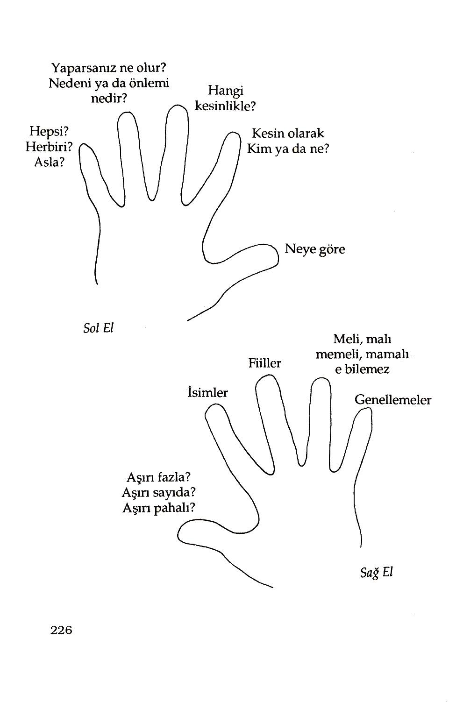

Nerede kullanacağınıza ilişkin iyi fikirleriniz yoksa; bu gücün size yararı olmayacaktır. En mükemmel testereyle ormanda dolaşabilirsiniz. Bu testereyle ormanda ne yapacaksınız? Hangi ağaçları, niçin kesmek istediğinizi biliyorsanız; kendi durumunuzu kontrol ediyorsunuz demektir. Bilmiyorsanız; siz çok mükemmel, fakat değerlendiremediğiniz bir alete sahipsiniz demektir.
Daha önce yaşamın kalitesinin, iletişimin kalitesine bağlı olduğunu öğrenmiştik.
Bu kısımda, içinde bulunduğunuz durum da yeteneklerinizi en iyi şekilde kullanabilmek için haberleşme ustalıklarınızı nasıl geliştirebileceğiniz üzerinde duracağız. Kesin olarak nereye gitmek istediğinizi ve oraya ulaşmanı za yardımcı olacak şeyleri bilmek, neler gerektiğini anlamak için strateji haritası yapılmalıdır.
Yola çıkmadan önce, şimdiye kadar neler öğrendiğinizi gözden geçirelim. En önemli nokta yapabilecekleriniz üzerine hiç bir kısıt koymamaktır. Anahtarınız da modelleme gücüdür. Taklitle, kusursuzluğa ulaşılabilir. Diğerleri bir şeyler yapıyorlarsa, örneğin; ateş üzerinde yürüyorlarsa, milyarları kazanıyorlarsa ya da başkalarıyla iyi geçiniyorlarsa, bu kişilerin yaptıklarını aynen modelleyerek, aynı sonuçlara ulaşabilirsiniz. Modelleme nasıl yapılır? Öncelikle, aynı eylemleri yaptığınız' zaman, aynı sonuçlara ulaşacağınız gerçeğini fark etmelisiniz. Her etkinin bir nedeni vardır. Bir kişinin iç ve dış eylemlerini aynen taklit edebilirseniz; siz de aynı sonuca ulaşabilirsiniz. Bir kişinin önce inanç sistemini, sonra zihinsel dizinini ve son olarak da fizyolojisini aynalayarak, zihinsel eylemlerini modellemeye başlarsınız. Bu üçünü birden etkin ve mükemmel bir şekilde gerçekleştirirseniz, her şeyi yapabilirsiniz.
Başarı ya da başarısızlığın, inançla başladığını öğrenmiş bulunuyorsunuz. Bir şeyi yapabileceğinize inanır ya da inanmazsınız; her iki durumda da haklısınız. Bir şeyi yapmak için gerekli ustalık ve kaynaklara sahip olsanız bile, kendi kendinize başaramayacağınızı söylediğiniz zaman; işin yapılabilmesini
200
mümkün kılan tüm sinirsel yolları, kendi kendinize kapamış oluyorsunuz. Kendi kendinize bir işi yapabileceğinizi söylediğinizde başarı için kaynakları harekete geçirecek şekilde, yolları açmış oluyorsunuz.
Asıl başarı formülünü (Ultimate Success Formula) öğrenmiş bulunuyorsunuz. Bu formül; sonucunuzu bilmek, ne elde ettiğinizin farkında olacak şekilde duyusal keskinliğinizi (hassasiyetinizi) geliştirmek, en uygun şekline dönüşünceye kadar davranışlarımızı değiştirme esnekliğine sahip olmak ve sonuca ulaşmak şeklinde dört adımdan oluşmaktadır. İstediğiniz sonuca ulaşamamak başarısız olduğunuzu mu gösterir? Şüphesiz hayır. Sadece dümencinin kayığı yönlendirdiği gibi, istediğinizi elde edinceye kadar davranışınızı değiştirmeniz gerekir.
Becerikli durumda olmanın, istediğiniz sonuçlara ulaşma ve cesaret vermedeki gücünü ve fizyolojinizi, iç temsilinizi nasıl düzenleyeceğinizi öğrenmiş
bulunuyorsunuz. Kendinizi başarıya adamışsanız, başaracağınızı biliyorsunuz demektir.
"Kişiler tembel değildir. Sadece, kendilerine esin kaynağı oluştu racak kadar, güçlü amaçları yoktur."
--Anthony Robbins
Bu sürecin içinde inanılmaz derecede dinamizmin olduğunu bilmeniz gerekir.
Ne kadar çok kaynak geliştirebilirseniz, o kadar çok güce sahip olursunuz; hissiniz ne kadar güçlüyse; daha güçlü durumlara ulaşabilmek için daha büyük kaynaklara ulaşabilirsiniz.
Sözün burasında, "1000'nci Maymun Sendromu" adı verilebilecek bir konuyla ilgili, çok ilginç bir çalışmadan bahsetmek yerinde olacaktır. Biyolog Lyall Watson, 1979'da yayımlanan "Hayatın Akışı" isimli kitabında, Japonya yakınlarında bir adada, maymunlar için yeni bir yiyecek olan kumla kaplı, yeni kazılmış, tatlı patatesleri maymunların keşfetmesiyle neler oldu 201
ğunu anlatmıştır. Maymunlar diğer yiyeceklerini, herhangi işleme tabi tutmadan yiyebildikleri için, önceleri bu kirli patateslere karşı kayıtsız kaldılar. Sonra maymunlardan birisi, patatesleri su akıntısında temizleyerek sorunu çözdü ve bu yöntemi, annesi ve oyun arkadaşlarına da öğretti. Bundan sonra, hayret verici bir olay gerçekleşti. Birbirleriyle hiç teması olmayan, çoğunluğu diğer adalarda yaşayan 1000 kadar maymun daha bu bilgiyi elde etti ve aynı işlemleri uygulamaya başladı. Bunların diğer maymunlarla iletişimini sağlayacak hiçbir fiziksel araç yoktu. Fakat şu ya da bu şekilde, yeni davranış şekli etrafa yayıldı.
Buna benzer çok sayıda olay vardır. Birbirleriyle hiçbir şekilde temas etmedikleri halde, dikkati çekecek derecede, aynı davranışı gösteren çok kişi vardır. Örneğin bir fizikçi, bir şey keşfettiğinde; aynı olayı, aynı anda başka yerlerde bulunan üç ayrı fizikçi de keşfedebilmektedir. Bu olay nasıl gerçekleşmektedir? Kesin olarak kimse bilmiyor, fakat önde gelen bilim adamları ve beyin araştırmacıları -fizikçi Daniel Bahm ve Biyolog Rupert Sheldnake gibi- yararlanılabilecek bir kolektif bilincin varlığına inanmaktadırlar. En uygun fizyolojinizle yoğunlaşarak, inançla-rınız aracılığıyla kendi kendinizi bir düzene sokarsanız; bu kolektif bilince ulaşmanın bir yolunu bulabilirsiniz.
Vücutlarınız, beyinleriniz ve durumlarınız, daha üst düzeydeki bir varoluşla harmoni içindeki diyapozona benzerler. Bu nedenle kendinizi daha iyi ayarladıkça, daha iyi düzene soktukça; bu zengin his ve bilgi dünyasına daha çok yaklaşabilirsiniz. Bu, sadece bilinçaltımızın bilgi süzgeci olabileceği gibi; onu elde etmek için yeterli düzeyde becerikli durumdaysak, bütünüyle dışımızda bulunanların da bilgi süzgeci olabilir.
Bu sürecin anahtar kısmı, ne istediğinizi bilmektir. Bilinçaltınız, bilgileri sizi belirli bir yöne yöneltecek şekilde sürekli olarak süreçlemektedir. Bilinçsiz düzeyde bile olsa zihniniz bilgileri bozmakta, almamakta, genellemeler yapmamaktadır.
Bu nedenle zihninizi verimli olarak çalıştırmadan önce, ulaşmayı um-202
duğunuz sonuçlarla ilgili algılamalarınızı geliştirmelisiniz.Maxwell Waltz aynı isimli kitabında buna "Psiko-Sibernatik" dını vermektedir. Beyin, tanımlanmış
bir hedefe sahip olduğunda buna ulaşıncaya kadar yoğunlaşmakta, yönlenmekte,tekrar yoğunlaşmakta ve tekrar yönlenmektedir. Tanımlanmış bir hedefi yoksa beynin enerjisi boşa harcanmaktadır.Bu durum dünyanın en muhteşem testeresiyle, ormanda ne yapacağını bilmeden dolaşan insanın durumuna benzemektedir
Kişilerin tam olarak kaynaklarına ulaşım yetenekleri arasındaki fark, amaçlarına doğrudan bağlıdır.1953 yılında Yale Üniversitesi mezunları arasında yapılan bir çalışma, bu noktayı çok açık olarak göstermektedir. Mezunlarla yapılan görüşmede onlardan açık ve belirli amaçlara sahiplerse, bunlara nasıl ulaşacaklarına ilişkin planlarını yazmaları istenmiştir. Mezunların sadece %3
ünün böyle yazılı amaçlara sahip olduğu görülmüştür.Yirmi yıl sonra, yani 1973'te araştırmacılar 1953'te görüşme yaptıkları kişilere tekrar gitmişler, diğer konular bir tarafa daha önce yazılı amaçlara sahip olan %3'lük kesimin finansal açıdan;geri kalann %97'nin toplamından daha iyi durumda olduklarını görmüşlerdir. Bu, sadece kişilerin finansal gelişmelerini göstermektedir.
Araştırmacılar ölçümü zor olan; mutluluk, neşeli olma gibi öznel durumlarda da
% 3'lük kesimin çok daha iyi olduklarını belirlemişlerdir. Bu durum, amaçları belirlemenin gücünü göstermektedir.
Bu bölümde isteklerinizin, rüyalarınızın ve amaçlarınızın nasıl formüle edileceğini öğreneceksiniz. Neye ulaşmak istediğinizi ve bunu elde etmenin yolunu zihninize nasıl yerleştireceğinizi öğreneceksiniz. Nasıl çözüleceğini bilmeden, hiç bilmece çözmeye çalıştınız mı? Bu, hangi sonuçlara ulaşmak istediğinizi bilmeden, hayatınızı düzene sokmaya çalışmaya benzer. Ulaşmak istediğiniz sonuçları bildiğinizde; öncelik derecesiyle beyninizin ve sinir sisteminizin hangi bilgileri alması gerektiği hakkında açık görüşleri, beyninize verirsiniz. Yani beyninize ve
203
rimli çalışması için hangi mesajlara ihtiyacı olduğunu bildirirsiniz.
"Zafer ilk adımla başlar’’
— Anonim
Bildiğiniz gibi sislerin içinde ne yöne gideceğini şaşıran çok sayıda insan vardır.
Bir o yöne, bir bu yöne gidip dururlar, onlar sadece bir yönden diğer yöne kaymaya çalışmaktadırlar. Yani aşağı doğru giderken, yukarı doğru gitmenin planlarını yapmaktadırlar. Problemleri basittir, ne istediklerini bilmiyorlardır. Ne olduğunu bilmeden hedefi vuramazsınız.
Bu bölümde sizden hayal etmenizi istiyorum. Fakat burada önemli olan bütün yoğunluğunuzu hayalinize vermenizdir. Bu bölümü sadece okumakla iyi şeyler yapmanız mümkün değildir. Elinize bir kağıt kalem alarak ya da alışıksanız bilgisayarın başına geçerek, biraz sonra anlatılacak amaç belirleme sürecinin son iki adımını yazarak, uygulamaya doğru ilk adımı atmalısınız.
Öncelikle en çok rahat ettiğiniz çalışma pozisyonuna geçiniz. Ne olmak istediğinizi, bununla ilgili fikirlerinizi oluşturmak için en az bir saat harcamayı planlayın. Bu sizin şimdiye kadar harcadığınız en değerli bir saat olabilir. Şimdi amaçlarınızı ve elde etmek istediğiniz sonuçları belirlemeye başlayacaksınız.
Diğer bir deyimle yaşamınız boyunca seyahat etmek istediğiniz yolun haritasını çıkaracaksınız.
Nereye
gideceğinizi
ve
oraya
nasıl
ulaşacağınızı
hesaplayacaksınız.
İzninizle, konunun burasında çok önemli bir uyarıda bulunmak istiyorum.
Yapmak istediklerinize hiçbir sınırlama koymayınız. Bu şüphesiz olmayacak şeylere amin demek değildir. Çok kısa boyluysanız basketbolda ribaunt (Basketbol potasından dönen topları kapma) yarışında birinci olmayı beklememelisiniz. Bu yarışı kısa boyla kazanmak da mümkündür; fakat o 204
enerjinizi en verimli yerde kullanmıyorsunuz demektir.Yani her şeyi elde etmek mümkündür. Size uygun olan amaçlara kısıt koymak, sınırlı bir yaşamınızın olacağını garanti etmek demektir. Amacınızı belirlerken mümkün olduğu kadar sınırlarınızı zorlayın. İstediğinizi elde etmenin tek yolu,ne istediğinizi bilmektir.
Bu nedenle hiç vakit kaybetmeden onu belirlemeye başlayın. Sonuçlarınızı belirlemede aşağıdaki beş adımı izleyiniz.
1. Sonuçlarınızı Olumlu Cümlelerle ifade Ediniz: Neyin gerçekleşmesini istediğinizi söyleyiniz, çoğu kez insanlar olmasını istedikleri şeyleri söylemek eğilimindedirler.
2. Mümkün Olduğu Kadar Kesin Olun: Sizin sonucunuzun görüntüsü, sesi, hissi, kokusu nasıldır? Tüm duygularınızla istediğiniz sonuçları tanımlamaya çalışın.
Tanımınızın duygusal yönü ne kadar zengin olursa, istediğiniz sonucu elde etmek için beyninizi o oranda güçlendirirsiniz. Sonuca kesin olarak hangi tarihte ulaşacağınızı belirleyin.
3. Açık Bir Kanıtlama Yordamına Sahip Olun: Sonuca ulaştıktan sonra nasıl görüneceğinizi, nasıl hissedeceğinizi ve dışınızdaki dünyada neler göreceğinizi, neler işiteceğinizi bilin. Amacınıza Ulaşıp ulaşmadığınızı nasıl anlayacağınızı bilmezseniz; amacınıza ulaşmış olsanız bile bunu fark edemezsiniz. Sonuçları bilmezseniz, kazanıyorken kaybediyor olduğunuzu sanabilirsiniz.
4.Kontrollü Olun : Sonuç, sizin tarafınızdan başlatılmalı ve sürdürülmelidir.
Kendi kendilerini sizin mutluluğunuz için değiştirecek diğer kişilere bağımlı olmamalıdır.
Sonuçlarınız
sizin
doğrudan
etkileyebileceğiniz
şeyleri
yansıtmalıdır.
5.Sonuçlarınızın Bütünsel Olarak Anlamlı ve istenilir Olup Olmadığını Sınayın : Gerçek amacınızın, gelecekteki sonuçlarının neler olacağını tahmin edin.
Sonucunuz, size ve diğer kişilere yararlı olmalıdır.
205
SONUÇLARI BELİRLEMENİN ANA ÖĞELERİ
KESİNLİK : Tam olarak ne yapmak istiyorsunuz?
DUYUSAL TEMEL : Ne göreceksiniz?
Ne duyacaksınız?
Ne hissedeceksiniz?
Ne koklayacaksınız?
Ne tadacaksınız?
İSTENİLEN DURUM
ŞİMDİKİ DURUM : Ne istiyorsunuz?
Şimdi ne oluyor?
KANITLAMA
YORDAMI: Sonucun gerçekleştiğini nasıl anlayacaksınız?
Seminerlerimde sürekli olarak sorduğum bir soruyu şimdi size de sormak istiyorum. Başaracağınızı bilirseniz ne yaparsınız? Başarıdan kesin olarak eminseniz, hangi yolu izlersiniz ve hangi eylemleri yaparsınız? İstediği şeyler hakkında herkesin biraz fikri vardır. Bunların bir kısmı daha fazla sevgi, daha fazla para, eğlenmek için daha çok zaman gibi belirsiz kavramlardır. Bununla birlikte bir sonuç elde edebilmede biobilgisayarlarınızın güçlenmesi için; yeni bir araba, yeni bir ev, daha iyi bir işten daha açık, daha kesin tanımlara ihtiyacınız vardır.
Listenizi yaptıkça bunların bir kısmının yıllardır düşündüğünüz şeyler olduğunu göreceksiniz. Bir kısmı da daha önce bilinçli olarak hiç formüle etmediğiniz şeyler olacaktır. Fakat ihtiyacınız olan şey, bilinçli olarak ne istediğinize karar vermektir, çünkü ne istediğinizi bilmek, elde edeceğiniz şeyi belirleyecek-206
tir.Dünyanızda bir şeyler olmadan önce, iç dünyanızda bir şeyler olmalıdır. Ne istediğinize ilişkin açık bir iç temsiliniz olduğunda bazı şaşırtıcı olaylar olacaktır.
Bu, amacınıza ulaşmak için zihninizi ve beyninizi programlayacaktır. Şimdiki kısıtlamalarınızın ötesine geçerek, önce zihninizde daha çok deney yapmalısınız, sonra yaşamınızı buna uydurmalısınız. Size basit bir fiziksel örnek vereyim.
Aşağıda söylenenleri yapınız Ayaklarınız biraz ayrık ve ileriye bakacak şekilde ayağa kalkınız. Ellerinizi yere paralel olacak şekilde öne doğru uzatınız.Rahat bir şekilde dönebileceğiniz kadar parmak uçlarınızla sola dönünüz. Döndükten sonra parmaklarınızın karşı duvarda hangi noktayı işaret ettiğine dikkat edin.
Şimdi eski yerinize dönün ve gözlerinizi kapatın. Zihninizde biraz daha öte dönmenin resmini canlandırın. Şimdi dönün. Gözlerinizi açın.Ne olduğuna dikkat edin. Çok daha öteye mi döndünüz? Şüphesiz. Burada önceki limitlerin ötesine dışsal olarak geçebilmek için önce beyninizi programladınız.
Bu bölümü, gerçek hayatta yapıyormuş gibi düşünün. Şimdi istediğiniz şekilde bir yaşam yaratacaksınız. Normal yaşantınızda ancak bir noktaya kadar gelebilirsiniz; fakat zihninizde geçmişteki deneyimlerinizden daha fazla gerçeği yaratacak zaman ayırabilirsiniz. Sonra iç dünyanızda yarattıklarınızı dış dünyada uygulayacaksınız.
1. Sahip Olmak, Yapmak, Olmak ve Paylaşmak istediklerinizle ilgjli Rüyalarınızı (Hayallerinizi) Depolamakla Başlayınız: Yaşamınızın bir parçası olmasını istediğiniz kişileri, hisleri ve yerleri yaratınız. Elinize kâğıdı kalemi alıp hemen oturun ve bunları yazmaya başlayın. Yazım işlemi, kaleminizi kaldırmadan en az 10- 15 dakika sürmelidir. Yazdığımız sonuçlara şimdi nasıl ulaşacağımızı tanımlamaya çalışmayın. Sadece yazın. Hiçbir kısıt koymayın. Derhal bir sonraki amaca geçebilmek için mümkün olduğunca kısaltmalar yapın. Sürenin tamamında kaleminiz çalışmalıdır. Beraber olmak ihtiyacını hissettiğiniz ailenizi, ilişkide
207
bulunduklarınızı; zihinsel, duygusal, sosyal, malzeme, fiziksel ve diğer durumları da kapsayacak, yani bir araya getirecek şekilde geniş sonuç örneklemeleri yapınız. Kral olduğunuzu kabul edin. Her şeyin sizin elinizde olduğunu hatırlayın.
Sonuca ulaşmada ilk anahtar, onun ne olduğunu bilmektir.
S
Amaç belirlemede bir anahtar da oyundur. Bırakın zihniniz serbestçe çalışsın.
Ortaya çıkabilecek her türlü kısıt sizin eserinizdir. Onlar nerede ortaya çıkar?
Sadece zihninizde. Bu nedenle ne zaman kendi kendinize kısıtlama koymaya kalkarsanız, hemen onu kovun . Bu işi görsel olarak yapın. Kafanızda rakibini ringin dışına atan pankreasçı görüntüsü yaratın. Bu görüntüyü getirdi ğiniz her kısıtlama için tekrar yaratın. Tüm kısıtlayıcı inançları ringin dışına attığınızda, sahip olduğunuz hissetme hürriyetinin farkında olun. Bu birinci adımdır. Şimdi listenizi yapın.
2.Yaptığınız Listenizi (Depoyu) inceleyin ve Sonuçlara ne Zaman Ulaşabileceğinizi Tahmin Edin : Sonuçlara ulaşmanız altı ay, bir yıl, iki yıl, beş yıl, on yıl, yirmi yıl sürebilir. Hangi zaman diliminde çalışmakta olduğunuzu görmek yararlıdır. Bazı kişiler yaptıkları listenin çoğunluğunun bugün yapmak istediklerinden oluştuğunu görebilirler. Diğerlerinin listeleri uzak gelecekte gerçekleştirmek istedikleriyle dolu olabilir. Tüm amaçlarınız kısa dönemli ise, daha uzun dönemli bakış açısına sahip olabilmek için çalışmaya başlamalısınız.
Tüm amaçlarınız uzun dönemliyse; beklediğiniz yöne doğru sizi götürecek adımları tanımlamak zorundasınız. Binlerce kilometrelik bir seyahat bir adımla başlar. Hem ilk adımların, hem de son adımların farkında olmak önemlidir.
3.Bu Yıl için En Önemli Dört Amacınızı Seçin : Sizi en çok heyecanlandıran, size en çok tatmini sağlayacak amaçlara kendinizi yöneltin. Bunları yazın. Şimdi yazın diyorum, çünkü bunları niçin mutlaka gerçekleştireceğinizi anlatacağım.
Açık, kesin ve olumlu olun. Kendi kendinize bu amaçlara ulaşacağınızdan 208
Niçin emin olduğunuzu ve niçin bunları yapmanın önemli olduğunu anlatın.
Bazı şeyleri yapmak için yeteri kadar neden bulabilirseniz; kemlinize bir şeyler yapmak zorunluluğunu hissedersiniz.Bir şeyi yapmak için sahip olduğumuz niyet; istediğimiz nesneden daha güçlü bir güdüleyicidir. Benim ilk bireysel gelişim hocam olan Jim Rohn daima "Yeterli nedenlerin varsa; her şeyi yapabilirsin" derdi. Neden; bir şeyi yapmaya kendinizi adamakla, o işe ilgi duymak arasındaki farktır. Hayatımız boyunca bir çok şeyi istediğimizi söyleriz.
Gerçekte bu, bizim bu şeylerle bir süre için ilgilendiğimizi gösterir. Örneğin sadece zengin olmak istediğinizi söylemek iyi bir amaçtır; ama bu sizin beyninize çok şey söylemez. Niçin zengin olmak istediğinizi ve zengin olmanın sizin için ne demek olduğunu anlarsanız; zengin olmak için çok daha fazla güdüleneceksiniz demektir. Bazı şeyleri niçin yaptığınızı bilmek, onların nasıl yapılacağını bilmekten çok daha fazla önemlidir. Yeteri kadar büyük niçine sahipseniz, onun nasıl yapılacağını mutlaka öğrenirsiniz. Yeteri kadar nedeniniz varsa eninde sonunda bu dünyadaki her şeyi yapabilirsiniz.
4.Temel Amaçlarınızı, Sonuçları Belirlemenin Ana Öğeleri Işığında Gözden Geçirin : Amaçlarınızı ifade şekliniz olumlu mudur? Duyuşsal olarak, özel (belirli) midirler? Bu amaçlara ulaşınca ne gibi deneyime sahip olacağınızı tanımlayınız.
Açık ve düzenli duyuşsal terimlerle ne göreceğinizi, hissedeceğinizi ve koklayacağınızı ifade ediniz. Bu amaçlar sizin tarafınızdan gerçekleş
tirilebiliyorsa; bunların bütünsel ve sizinle birlikte diğerleri tarafından da istenilir olup olmadıklarına dikkat edin. Amaçlarınız bu koşullardan herhangi birisine uymuyorsa; hepsine uyuncaya kadar amacınızı değiştirin.
5.Elinizde Bulunan Önemli Kaynakların Bir Listesini Yapın: Bir inşaat projesine sahip olduğunuzu bilmek zorundasınız. GeleSınırsız Güç -14
209
ceğinizin görüntüsünü güçlendirmek için de aynı şeyi yapmak zorundasınız.
Sahip olacaklarınıza yardımcı olacak karakter özelliklerinizi, arkadaşlarınızı, finansal kaynaklarınızı, eğitiminizi, zamanınızı, enerjinizi vb. nelere sahipseniz bir listesini yapın. Böylece gücünüzün, ustalıklarınızın, kaynaklarınızın ve aletlerinizin stoğu ortaya çıkacaktır.
6. Bu Kaynakları Ustalıkla Kullandığınız Zamanlar Üzerinde Yoğunlaşın : Hayatınızda bütünüyle başarılı olduğunuz üç yada beş anınızı ortaya çıkarın.
İşinizde, sporda, finansal konularda ve ilişkilerinizde özellikle başarılı olduğunuz zamanları düşünün. Bu, borsada çok başarılı olduğunuz bir gün ya da çocuklarınızla harika bir ilişki içinde olduğunuz bir an gibi herhangi bir durum olabilir.
Ne yaparak başarılı olduğunuzu, etkin olarak kullandığınız kaynak ve nitelikleri, sizin başarılı olmanızı sağlayan durumu tanımlayın.
7.Bu Amaçlara Ulaşmak İçin Nasıl insan Olmanız Gerektiği Üzerinde Düşünün : Çok fazla disiplin eğitimi mi gerekir? Zamanınızı iyi kullanmak zorunda mısınız?
Örneğin insani konularda farklılıklar getirecek bir lider olmak istiyorsanız; seçilecek kimseyi tanımlayın ve çok sayıda kişiyi etkileme yeteneğine sahip olun.
Başarı hakkında çok şey işitmişizdir, fakat başarının öğeleri olan tutum, inanç ve davranışlar hakkında çok az şey biliyoruz. Eğer bu öğeleri iyice kavramamışsanız bunları bir bütün olarak bir araya getirmekte güçlük çekebilirsiniz. Bu nedenle şimdi durun ve tüm amaçlarınızı gerçekleştirmek için sahip olmanız gereken karakter özellikleri, ustalıklar, tutumlar, inançlar ve disiplinler hakkında birkaç paragraf ya da sayfa yazın. Bunun için biraz zaman harcayın.
8.Şu Anda istediğiniz Sonuçları Almanızı Engelleyen Şeyleri Yazın : Yarattığınız kısıtlardan kurtulmanın bir yolu, onların
210
Onların tam olarak ne olduğunu bilmektir. İstediklerinizi gerçekleştirmede neyin engel olduğunu anlayabilmek için, kişiliğinizi en ince ayrıntılarına kadar incelemelisiniz. Plan mı yapamıyorsunuz?.Plan yapıyorsunuz, fakat eyleme geçmekte mi başarısız oluyorsunuz? Aynı anda çok fazla şey mi yapmak istiyorsunuz yada diğer şeylerle ilgilenmeden sadece bir tek sonucamı takılıp kalıyorsunuz? Geçmişte en kötü senaryoların hayaliyle iç dünyanızın eyleme geçmenizi engellediği oldu mu? Kendi kendinizi sınırlayan yani başarısızlığı getiren stratejileriniz vardır.Şimdi geçmişte uyguladığınız bu stratejilerin farkına vararak, onları değiştirmeye çalışacaksınız.
Ne istediğinizi, niçin istediğinizi, kimin yardım edebileceği gibi bir çok konuyu bilebilirsiniz; fakat sonucu belirleyen kritik öğe kendi eylemlerinizdir.
Eylemlerinize rehberlik edecek her adımı gösteren bir plan hazırlamanız gerekir.
Bir ev yaparken hemen dışarı çıkıp odun, çivi ve testere alıp inşaatamı başlıyorsunuz? Kesim ve çekiçleme işlemiyle başlarsanız sonucun nasıl olacağını görebiliyor musunuz? Bu işlemin sonucu başarılı olurmu? Sanmıyorum. Bir ev yapmak için önce bir taslağa sonra bir plana sahip olmak gerekir. Eylemleriniz birbirini tamamlayacak ve kuvvetlendirecek şekilde bir sıra ve yapı dahilinde olmalıdır. Benzer şeyler yaşamınız için de geçerlidir. Bu nedenle şimdi başarı için planlarınızı bir araya getirmelisiniz.
İstediğiniz sonuçların üretimiyle uyumlu, hangi eylemleri yapmanız gerekir?
Emin değilseniz, ulaşmak istediğiniz sonuçlara ulaşmış olan bir kişiyi modelleyebilirsiniz. Asıl amaçlarınızla başlayın. Sonra adım adım geriye gidiniz.
Asıl amaçlarınızdan birisi finansal olarak bağımsız olmaksa, önceki adım kendi şirketinizin patronu olmaktır. Bundan önceki adım da genel müdür ya da önemli bir makam olabilir. Diğer bir adım da paranızın yönetiminde yardımcı olacak becerikli bir yatırım danışmanı ve /veya vergi hukukçusu bulmak olabilir.
Amacınıza ulaşmayı destekleyecek, yapılacak bir şeyleri buluncaya kadar çalışmanızı geriye götürmek kritik bir konudur. Bugün hemen
211
bir tasarruf hesabı açtırabilirsiniz ya da kültürümüzde başarılı olmuş kimselerin finansal stratejilerini öğretecek bir kitap satın alabilirsiniz. Profesyonel bir dansçı olmak istiyorsanız; bu sonuca ulaşmak için ne yapmak zorundasınız?
Temel adımlar nelerdir ve istediğiniz sonuçları üretebilmek için bugün, yarın, gelecek hafta, bu ay, bu yıl neler yapabilirsiniz? Dünyanın en büyük kompozitörü olmak için yol boyunca hangi adımlar atılmalıdır? İster özel, ister iş
yaşamınızda olsun, istediğiniz sonuçlara ulaşabilmek için asıl amacınızdan aşağı doğru inerek kesin olarak hangi yolda gitmeniz ve bugün ne yapmanız gerektiğini bulabilirsiniz.
Planınızı tasarlayabilmek için son alıştırmadaki bilgiden yararlanın. Planınızın ne olması gerektiğinden emin değilseniz; kendi kendinize şu anda isteklerinize ulaşmanızı engelleyen şeylerin neler olduğunu sorun. Bu sorunun cevabı, hemen değiştirmeye çalışabileceğiniz bir şeyler olmalıdır. Bu problemin çözümü daha büyük amaçlarınıza ulaşabilmeniz için bir alt amaç ya da bir atlama taşı olacaktır.
9. Dört Temel Amacınızın Her Birine Zaman Ayırın ve Bıınlara Ulaşmak için Adım Adım Neler Yapılması Gerektiğini Gösteren ilk Planınızı Yapın: Bir amaçla başlamayı ve kendi kendinize; "Bunu gerçekleştirmek için ilk önce ne yapmak zorundayım" sorusunu sormayı unutmayın. "Şimdi beni ne engellemektedir ve bunu değiştirmek için ne yapabilirim?" Planınızın bugün yapabileceğiniz bazı şeyleri de kapsadığından emin olun.
Şimdiye kadar asıl başarı formülünün ilk kısmını tamamlamış olduk. Mutlak sonucunuzu bilmelisiniz. Hem kısa, hem de uzun dönemli sonuçlarınızı tanımladınız ve kişiliğinizin hangi yönlerinin bu sonuca ulaşmada yardımcı olacağını belirlediniz. Şimdi oraya nasıl ulaşacağınıza ilişkin bir strateji geliştirmenizi istiyorum.
Mükemmelliğe ulaşmanın en emin yolu nedir? Sizin istediklerinizi gerçekleştirmiş bulunanları modellemektir.
212
1 0 . Bazı Modeller Oluşturun: Onlar sizin yaşam çevrenizden yada büyük başarılar elde etmiş ünlü kişilerden olabilir. İsteklerinizi başaran üç ya da beş
kişinin ismini ve sonra onları farklı kılan davranış ve nitelikleri belirleyen birkaç kelime yazın.ız Bu işi yaptıktan sonra gözlerinizi kapatın ve bu kişilerin her birinin, amacınıza en iyi nasıl ulaşabileceğinize ilişkin önerilerde bulunduğunu hayal edin. Onlarla yüz yüze konuşuyorsunuz; söyledikleri temel fikirlerden birisini yazın. Bu bir engelden nasıl kurtulunacağına ya da bir kısıtlamanın nasıl kaldırılacağına, neye bakılacağına ya da neye dikkat edileceğine ilişkin olabilir.
Onların sizinle konuştuğunu düşünün ve her birisinin isminin altına, sizce onların söyleyebileceği ilk fikri yazın. Onları kişisel olarak tanımıyor olsanız bile, bu süreç onların geleceğiniz için mükemmel danışmanlar olmasını sağlayacaktır.
Adnan Kaşıkçı, Rockefeller'i modelledi. O, zengin ve başarılı bir iş adamı olmak istedi ve bu nedenle aynı işi daha önce gerçekleştiren birisini modelledi. Steven Spielberg çalışmaya başlamadan önce, Üniversal Stüdyosundaki kişileri modelledi. Büyük başarılar elde etmiş herkesin; şu ya da bu şekilde kendilerine doğru yolu gösteren bir modeli, akıl danışmanı ya da hocası vardır.
Şimdi nereye gitmek istediğinize ilişkin açık bir iç temsiliniz var. Halen başarılı olmuş kişileri izlerseniz, yanlış yollara girmekten kurtulur, enerji ve zaman tasarrufunda bulunabilirsiniz. Yaşamınızda size model olabilecek kişiler kimlerdir? Arkadaşlarınız, aileniz, ulusal liderleriniz ve ünlüler bu konudaki kaynaklarmızdır. İyi modeller bilmiyorsanız, özenli bir şekilde birilerini bulmak için çabalayınız.
Şu anda yapmaya çalıştığınız şey; sonuçlarınızın açık, net paternlerini oluşturabilmek için beyninize sinyal göndermektir. Amaçlar mıknatısa benzer.
Kendilerini gerçekleştirecek her şeyi çekerler. Altıncı Bölümde; beyninizi nasıl çalıştıracağınızı, olumsuz imajları azaltacak ve olumluları artıracak şekilde bi-
çemlerinizi nasıl ele almanız gerektiğini öğrendiniz. Gelin bu 213
bilgileri amaçlarınıza uygulayalım. Herhangi bir şeyde bütünüyle başarılı olduğunuz zamandaki kişiliğinizi derinlemesine inceleyiniz. Gözlerinizi kapayınız ve bu başarının açık ve parlak bir görüntüsünü oluşturun. Görüntünün solda, sağda, yukarıda, ortada ya da aşağıda mı gerçekleştiğini not ediniz. Tekrar ediyorum; onun yarattığı sesin tipi ve iç hisler kadar hareketlerin büyüklüğüne, şekline, kalitesine yani tüm altbiçemlerine dikkat etmelisiniz. Şimdi bugün yazdığınız sonuçlar hakkında düşünün. Bugün belirlediğiniz her şeyi gerçekleştirdiğinizde; nasıl olacağınıza ilişkin bir görüntü oluşturun. Bu görüntü-
yü diğeriyle aynı yere koyarak yapabileceğiniz kadar renkli, parlak, net ve büyük yapın. Kendinizi nasıl hissettiğinize dikkat edin. İlk sonuçlarınızı formüle ettiğiniz zamandan daha farklı hissedeceksiniz; çünkü şimdi başarılı olacağınıza inancınız daha fazladır.
Bunu yapmakta güçlük çekiyorsanız, daha önce sözünü ettiğimiz "Swish"
yöntemini kullanınız. Ne istediğinize ilişkin imajı, zihinsel çerçevenizin diğer tarafına koyun. Onun görüntüsünü bulanık, siyah ve beyaz yapın.
Algılayabileceğiniz herhangi bir başarısızlık temsilinin içinden başarı imajını, daha önceki şekliyle hızla öne çıkarın. Onu o şekilde hareket ettirin ki, ba-
şardığınız şeyin büyüklüğü, renkliliği ve temel nitelikleri ortaya çıksın. Başarmayı istediğinizin daha açık, daha net resmini beyninizin algılayabilmesi için, bu alıştırmaları taksit taksit yapmalısınız. Beyin derin hislere ve tekrarlara daha çok cevap verecektir. Bunun için sürekli olarak istediğiniz şeyi yaşamınızda denerseniz ve bu deneyleri yeteri kadar derin ve yoğun hislerle yaparsanız; istediklerinizi %100'e yakın bir olasılıkla gerçekleştirebilirsiniz. Başarıya giden yolda sürekli inşaatın olacağını hatırlayınız.
11. İdeal Bir Gün Tasarlayın: Farklı amaç türlerinin hepsine birden sahip olmak çok iyidir. Bununla birlikte onların hepsini bir arada tasarlamak çok daha anlamlı olacaktır. Bu nedenle
214
Şimdi ideal bir gün tasarlayın. Bu günün içinde kimler olacaktır. Ne yapacaksınız? Nasıl başlayacaksınız? Nereye gideceksiniz.Nerede olacaksınız?
Bu işlemleri günün tamamı için tasarlayın. İdeal günün sonunda yatarken kendinizi nasıl hissedeceksiniz? Bir kağıt ve kalem alın. Bunları ayrıntılarıyla tanımlayın. Yaşadığınız gerçekler, eylemler ve sonuçların; zihninizde yaratılarak başladığını hatırlayınız. Onun için de en çok istediğiniz şekilde bir günü nasıl yaşamak istediğinizi belirleyin.
12. Mükemmel Bir Çevre Oluşturun: Bazen rüyaların evde başladığını unuturuz.
Başarıya doğru ilk adımımızı atmamızı sağlayan, yaratıcılığımızı besleyen, yani bulunabileceğimiz her konuda bize yardımcı olan atmosferi unuturuz.
Bu nedenle ideal bir çevre tasarlamanızı ve bu yerle ilgili duygularınızı telaffuz etmeye başlamanızı istiyorum. Bırakın zihniniz serbestçe çalışsın. Hiçbir kısıtlama koymayın. Ne istiyorsanız oraya yerleştirin. Bir kral gibi düşünmeyi unutmayın. Çevreyi bir insan olarak size en iyi şeyleri verebilecek şekilde tasarlayın. Ormanda, okyanusta, büroda mı, nerede olmak islersiniz? Bilgisayar, telefon, müzik, resim gibi hangi araçlara sahip olmak istersiniz? Yaşamınız boyunca isteklerinizi gerçekleştirmeyi garantileyebilmek için, çevrenizde hangi destek personelinin bulunmasını istersiniz?
İdeal bir gününüzle ilgili açık bir temsiliniz yoksa; onu yaratma şansınız ne olabilir? İdeal bir çevrenin ne olduğunu bilmiyorsanız, onu nasıl yaratacaksınız?
Hedefinizin ne olduğunu bilmeden hedefi nasıl vuracaksınız? Beyninizin, neye ulaşmak islediğinize ilişkin; açık, doğrudan sinyallere ihtiyacı olduğunu unutmayınız. Zihniniz, istediğiniz her şeyi verebilecek güce sahiptir. Fakat bunu ancak kendisine ulaşan sinyaller açık, parlak, voğun ve net olursa yapabilir.
215
"Düşünme zor iştir. Muhtemelen bu nedenle çok az kişi düşünür."
— Henry Ford
Bu bölümdeki alıştırmaları yapmak; hatasız sinyaller üretmeye yönelik en önemli adımlar olacaktır. Ne olduğunu bilmezseniz, sonucunuza ulaşamazsınız.
Bu bölümden herhangi bir şey öğrendinizse; o da "Sonuçları mutlaka elde edebileceğinizi bilmek" olmalıdır. İstediğiniz sonuçları zihninizde prog ramlamazsanız, başka birileri bu programı sizin için yapacaktır. Kendi planınız yoksa, başkaları sizi kendi planlarına uyduracaktır. Bütün yaptığınız bu bölümü sadece okumaksa; boşa zaman harcadınız demektir. Her bir alıştırmayı yapmak için zaman ayırmanız zorunludur. İlk başta kolay olmayabilir, fakat bana inanın, çabanıza değecektir. Alıştırmaları yaptıkça bu iş, size daha eğlenceli gelecektir.
Bir çok kimsenin hayatta başarılı olamamasının temel nedenlerinden birisi, başarının genellikle çok çalışmanın arkasında gizlenmiş olmasıdır. İyi bir düzenleme ya da sonuçların geliştirilmesi de çok çalışmayı gerektirir. Birçok kimse için bunları bir kenara bırakıp, yaşamlarını tasarlamak yerine, kendilerini hayatın akışına bırakmak daha kolay gelmektedir. Şimdi gücünüzü kullanarak tüm bu alıştırmaları yapacak şekilde kendinizi disiplin altına sokun. Yaşamda sadece iki üzüntünün (acının) olduğunu söylerler. Bunlardan birisi disiplin diğeri de karamsarlıktır. Disiplin üzüntüsü bir kilogram ise karamsarlık üzüntüsü bin kilogramdır. On iki alıştırmayı uygulamakla kazanacaklarınız karşısında şaşıracaksınız! Bunları kendiniz için uygulayın.
Aynı zamanda sonuçlarınızı düzenli olarak gözden geçirmek de önemlidir. Bazen siz değişirsiniz, fakat sonuçlarınız aynı kalır. Fakat siz, yaşamınız için aynı şeyleri yaratmak isteyip istemediğinizi görmek için asla durmamalısınız. Önceleri sonuçlarınızı birkaç ayda bir sistematik olarak güncelleştirin. Daha sonra bu sureyi altı ay ya da bir yıla indirebilirsiniz. Bir ya-216
rarlı yöntem de bunları bir deftere kaydetmektir. Böylece gelişmeleri adım adım izleme olanağına sahip olursunuz. Defterin aracılığıyla, hayatınızın gelişmesini ve ne kadar büyüdüğünüzü görme olanağına kavuşursunuz. Hayatınız yaşamaya değerse, kaydetmeye de değer.
Bunlar işe yarar mı? Yarayacağına iddiaya girin. Üç yıl önce oturdum ideal gün ve çevre tasarımlarımı yazdım. Şimdi o koşullarda yaşıyorum.
O zaman Kaliforniya'da Marina del Rey adlı önemsiz bir yerde yaşıyordum, fakat daha iyi bir yer istediğimi biliyordum. Bu nedenle kendi amaç düzenleme (belirleme) işyerimi açtım. İdeal günümü tasarlamaya ve hayalimde en çok istediğim yaşamı aynen gerçekleştirebilmek için günlük deneyimlerimle, bilinçaltımı programlamaya karar verdim. İşte ben böyle başladım. Sabahleyin kalkınca okyanusu görebileceğimi ve plaja koşabileceğimi biliyordum. Çok açık olmasa bile, hem ağaçları hem de plajı olan bir görüntüye sahiptim.
Alıştırmalardan sonra çalışmak için büyük bir yer istedim. Onu yüksek ve geniş
bir yer olarak görüyordum. Onu evimin ikinci ya da üçüncü katında silindirik bir şekilde görüyordum. Bir limuzin ve sürücü istedim. Düzenli olarak yeni fikirler üretmek için beyin fırtınası yapabileceğim; benim kadar güçlü ve heyecanlı dört ya da beş iş ortağı istedim. Eşim olacak ideal bir kadın hayal ettim. Hiç param yoktu. Bu nedenle finansal olarak bağımsız olmaya karar verdim.
Zihnimde programladığım her şeyi elde ettim. Hayal ettiğim her şey gerçekleşti.
Şatom Marina del Rey'de yaşarken nasıl hayal ettiysem, tam tamına öyledir. Altı ay sonra idealimdeki kadınla karşılaştım ve onsekiz ay sonra onunla evlendim.
Yaratıcılığımı bütünüyle destekleyecek bir çevre yarattım. Bu çevre, olabileceğim herşey için, saygınlığımı arttırmak için gerekli tetikleme (ateşleme) görevini düzenli bir şekilde yapmaktadır. Niçin? Çünkü ben, kendi kendime bir hedef belirledim ve her gün uyumlu bir şekilde açık, doğrudan, kesin olarak kendi ger
217
çeğimi beynime ilettim. Açık ve kesin bir hedefe sahip olmakla, güçlü bilinçsiz zihnim istediğim sonuçları üreterek eylem ve düşünceleri gerçekleştirmede bana rehberlik etti. Bu benim işime yaradı, sizin de işinize yarayabilir.
"insan hayal ettiği sürece yaşar."
-Atasözü-
Son olarak bir şey daha yapmalısınız. Daha önce belirlediğiniz amaçların bir listesini yapın ki, bunlardan yapabileceklerinizin hepsini ideal gününüze yerleştirmiştiniz, bu listeye sizin şimdi yararlanabileceğiniz ya da yararlanmakta olduğunuz eylemleri ve kişileri yani kaynaklarınızı dahil ediniz. Ben buna şükran günlüğü diyorum. Bazı kişiler isteklerine çok bağlanırlar ve ellerindeki kaynakların değerini takdir edemezler. Amaca doğru atılacak ilk adım nelere sahip olduğunuzu görmektir. Bunlara sahip olduğunuza şükrederek, onları gelecekteki başarılarınız için kullanınız. Yaşamınızı her an daha iyi yapacak yollara sahipsiniz. En çılgın hayallerinizin gerçekleşmesi, doğru yolda bugün atılacak adımlarla başlar. Sheakspeare bir zamanlar "Eylem mükemmel bir hitabettir." diye yazmıştı. Bu gün mükemmel eylemlere başlarsanız; mükemmel sonuçlara ulaşırsınız.
Bu bölümde sonuçlarınızı formüle etmede, kesinliğin önemini gördünüz. Aynı şey hem kendi kendinizle hem de çevrenizle olan iletişim için geçerlidir. Kesinlik arttıkça, etkinlik de artacaktır.
Şimdi de sözü edilen şekilde kesinliğe ulaşabilmenin araçları hakkındaki fikirlerimi sizinle paylaşmak istiyorum.
218
BÖLÜM: 12
Kesinliğin Gücü
"Dil, özlemle merhamet ya da talih ararken; ayı oynatmak için çatlak demlikle tempo tutmaya benzer."
— Gustave Flaubert
SİHİRLİYMİŞ gibi gelen sözleri duyduğunuz bir anı düşünün. Bu bir özdeyiş ya da Martin Luther King Jr.'ın "Bir rüyam var..." diye başlayan konuşması olabilir.
Babanızın, annenizin ya da önem verdiğiniz bir öğretmeninizin sözleri de olabilir. Öyle kuvvetli, kesin ve rezonanslı söylenmiştir ki, biz bunları her an, her yönüyle hatırlayabiliriz. Rudyard Kipling bir zamanlar, "insanların kullandığı en güçlü ilaç, kelimelerdir" demiştir. Bize sihirli, mest edici gelen kelimeleri hatırlayıp düşünebiliriz.
John Grinder'le Richard Bandler başarılı kişiler üzerinde yaptıkları çalışmalarda, bu kişilerin tutumlarının ortak olduğunu gördüler. Bunların en önemlilerinden birisi de kesin konuşma ustalıklarıydı. Bir yönetici, bilgiyi başarılı bir şekilde kullan
219
malıdır. John Grinder ve Richard Bandler en başarılı yöneticilerin, bilginin özünü hemen kavrama ve bu bilgiyi diğerlerine iletebilme yeteneklerine sahip olduklarını gördüler. Onlar, önemli saydıkları fikirleri büyük bir kesinlikle (netlikle) anahtar deyim ve kelimelerle birlikte taşıyorlardı.
Aynı zamanda her şeyi bilmek zorunda olmadıklarını da biliyorlardı. Neleri bilmek zorunda olduklarını ve neleri bilmeleri gerekmediğini çok iyi biliyorlar ve bilmeleri gereken konular üzerinde yoğun olarak duruyorlardı. John Grinder ve Richar Bandler; Virginia Satir, Fritz Perls, Dr. Milton Erickson gibi önemli terapicilerin çoğu kez, kısa sürede sonuca ulaşmaların sağlayan deyimlerden bazılarının, anılan terapiciler tarafından bütünüyle aynı şekilde kullanıldığını da gördüler.
John Grinder ve Richard Bandler'in bulgularında, şaşırtıcı hiçbir şey yoktur.
Hatırlayın! Biz, haritanın bölgenin kendisi olmadığını öğrenmiştik. Deneyimleri tanımlamakta kullandığımız kelimeler, deneyimlerin kendisi değildir. Onlar, sadece ortaya koyduğumuz en iyi sözel temsillerdir. Bu nedenle başarılı olmanın ölçülerinden birisinin de ne istediğinizi kelimelerinizle yeterli doğruluk ve kesinlikte
iletebilmeniz,
yani
bölgenin
kendisini
yeterli
kesinlikte
haritalaştırabilme gücünüz olduğunu söylüyoruz. Nasıl sihirliymiş gibi gelen kelimeleri hatırlıyorsanız; istediğinizi kesin ya da ters şekillerde ilettiğiniz anları da hatırlarsınız. Siz bir şey söylemek isterken karşı taraf bunun tam tersini algılamış olabilir. Bu nedenle kesin bir dil; kişileri doğru yöne götürdüğü gibi, kaypak dil de ters yöne götürebilir. George Orwell "1984" isimli kitabının ana temasını oluşturan fikri, şöyle özetlemişti: "Düşünce dili çürütürse, dil de düşünceyi çürütebilir."
Bu bölümde, belki daha önce hiç gerçekleştiremediğiniz kadar kesin ve etkili iletişimde bulunmanıza yardımcı olabilecek araçlar hakkında bilgi sahibi olacaksınız. Başkalarının da aynı sonucu alabilmelerine yardımcı olacak yolları öğreneceksiniz. Belirsizlikleri ve yanlış anlaşılmaları önleyebilecek ve herkesin 220
yararlanabileceği basit sözel araçlar vardır. Kelimeler duvar da olabilir, köprü de. Onları insanları ayırmak için değil, birleştirmek için kullanmak önemlidir.
Seminerlerime katılanlara istediklerini nasıl elde edebileceklerini anlatıyorum.
Gerçekte ben onlara kağıdın en üstüne "İstedilerimi nasıl elde edebilirim" diye yazmalarını söylüyorum. Uzun bir yolculuktan sonra sihirli formülü veriyorum.
İstediklerinizi nasıl elde edersiniz; "Konferansın sonunda isteyin" diyorum.
' Şaka mı yapıyorum? Hayır. "İsteyin" dediğim zaman; özür dileyerek, şikayet ederek ya da alçalarak isteyin demiyorum. Bunu söylerken bir hayır yapılmasını, bedava bir öğle yemeği vb. şeyler bekleyin demiyorum. İşinizi başkalarının yapmasını beklemeyin. Söylemek istediğim şey, zekice ve kesin olarak istemeyi öğrenmenizdir. Sonucu tanımlamanıza ve ulaşmanıza yardımcı olacak şekilde istemeyi öğrenin. Son bölümde ulaşmak istediğiniz sonuçları, amaçlan, eylemleri formüle ettiğinizde, ne yapacağınızı öğrenmeye başladınız. Şimdi biraz da belirli sözel araçlara ihtiyacınız var. Zekice ve kesinlikle istemenin beş temel prensibi vardır.
1. NE İSTEDİĞİNİZİ BİLİN:
Ne istediğinizi hem kendinize hem de bir başkasına tanımlamalısınız. Ne kadar yüksek, ne kadar uzak, ne kadar çok? Ne zaman, nerede, nasıl, kiminle? İş
hayatınızda bir krediye ihtiyacınız varsa; nasıl isteneceğini bilirseniz, bu krediyi bulursunuz. "Üretim hattını genişletmek için biraz daha paraya ihtiyacımız var, bize biraz kredi verir misiniz?" derseniz, krediyi alamazsınız. Kesin olarak neye ihtiyacınız olduğunu, niçin ihtiyacınız olduğunu ve ne zaman ihtiyacınız olduğunu tanımlamalısınız. Onunla ne üretebileceğinizi de göstermek zorundasınız. Amaç düzenleme seminerlerimde, seminere katılanlar, biraz paraya ihtiyacım var diyerek istemektedirler. Ben de onlara birkaç ku 221
ruş para veriyorum. Onlar istiyorlar ve alıyorlar; fakat zekice istemedikleri için istediklerini alamıyorlar.
2.SİZE YARDIM EDEBİLECEKLERDEN İSTEYİN:
Ne istediğinizi bilmek yetmez, aynı zamanda bilgi, sermaye, duyarlılık, iş
deneyimi gibi belirli kaynaklara sahip olan kimselerden istemelisiniz. Diyelim ki, eşinizle bir sorununuz var. İlişkileriniz kopuyor. Kalbinizi boşaltmak istiyorsunuz.
Bir insanın olabileceği kadar dürüst ve kesin olabilirsiniz. Sizinki kadar zayıf ilişkilere sahip birisinden yardım istemeye kalkarsanız bu kişi size yardımcı olabilir mi? Şüphesiz, yardımcı olamaz.
Yardım istenecek uygun kişiyi bulmak, bizi yine neyin ne işe yaradığını öğrenmeye dikkat etme konusuna geri götürecektir. Daha iyi bir iş, daha iyi bir ilişki, daha iyi bir yatırım programı, ne isterseniz isteyin; bunlarla ilgili bazı şeylerin başkaları tarafından yapılmış olduğuna dikkat edin. Buradaki asıl sorun istediklerimizi başaran kimseleri bulmak ve onların neleri doğru yaptığını belirleyebilmektir. Bir çoğumuz meyhane akıllılığına meyilliyizdir. İşittiklerimiz sempatik gelir ve bunların hemen sonucunu alacağımızı sanırız. Sempati, uzmanlık ve bilgiyle eşleşmedikçe bir işe yaramayacaktır.
3.İSTEDİĞİNİZ KİMSE İÇİN BİR FAYDA YARATIN:
Sadece istemeyin ve birilerinin size bir şeyler vereceğini beklemeyin. Önce istediğiniz kimseye nasıl yardımcı olabileceğinizi hesaplayın. İşle ilgili iyi bir fikriniz ve bunu gerçekleştirebilmek için de paraya ihtiyacınız varsa; bu parayı elde etmenin bir yolu, size hem yardım edecek, hem de sizden (yapılacak işten) yararlanabilecek kişiyi bulmaktır. Ona fikrinizin hem size, hem kendisine nasıl para kazandıracağını göstermelisiniz. Yaratacağınız faydanın her zaman maddi şeyler olması gerekmez. Yarattığınız fayda bir his, bir duyarlılık ya da bir rüya olabilir. Bana
222
gelip 100 milyon liraya ihtiyacım var derseniz; ben de muhtemelen, birçok kişinin paraya ihtiyacı olduğunu söylerim. Bu paraya, kişilerin yaşamında bir farklılık yaratmak için ihtiyacınız olduğunu söylerseniz, muhtemelen sizi dinlemeye başlarım. Siz bana kesin olarak diğerlerine ve kendinize nasıl faydalı olabileceğinizi gösterirseniz; ben de size yardım etmenin, bana ne gibi yararlar sağlayacağını düşünmeye başlarım.
4.KARARLI, BENZEŞIMLİ İNANÇLA İSTEYİN:
Başarısız olmanın en emin yolu, kararsız olmaktır. Siz ne istediğinizden emin değilseniz; başkaları nasıl emin olsun? Bu nedenle, isterken kesin bir inanç içinde olun. Fizyolojiniz ve kelimelerinizle inancınızı gösterin. Ne istediğinizden emin olduğunuzu gösterebilirseniz, mutlaka başaracaksınız ve mutlaka hem kendiniz, hem de istediğiniz kimse için bir fayda yaratacaksınız.
Bazı kişiler, bu dört prensibi de en iyi şekilde uygularlar; fakat yine de istediklerini elde edemezler. Çünkü onlar beşinci prensibi uygulamamışlardır.
İstediklerini elde edinceye kadar istememişlerdir. Zekice istemenin beşinci ve en önemli adımı budur.
5.İSTEDİĞİNİ ELDE EDİNCEYE KADAR İSTE:
Bu, aynı kişiden isteyin demek değildir. Kesin olarak aynı şekilde isteyin demek de değildir. Asıl başarı formülü, "Ne elde ettiğinizi bilinceye kadar duyuşsal keskinliğinizi ve kişisel değişme esnekliğinizi geliştirmek zorundasınız" der. Bu nedenle, istediğiniz zaman; istediğinizi elde edinceye kadar, kendinizi değiş-
tirmek ve düzenlemek zorundasınız. Başarılı kimselerin yaşamlarını incelediğinizde; onların isteklerinde çok ısrarlı olduklarını, devamlı denediklerini, devamlı değiştiklerini ve er ya da geç ihtiyaçlarını giderecek birisini bulduklarını görürsünüz.
223
Formülün en zor tarafı nedir? Birçok kimse için kesin olara isteyebilmek, en zor tarafı oluşturur. Kesin iletişime büyük prim veren bir kültür içinde yaşamıyoruz.
Belki bu bizim kültürümüzün en büyük hatasıdır. Dil, bir toplumun ihtiyaçların yansıtır. Bir Eskimo karla ilgili birkaç düzine kelime bilir. Niçin? Etkin bir Eskimo olabilmek için, kar çeşitleri arasındaki farkları ayırt edebilme yeteneğine sahip olmak zorundasınız. Üzerine düştüğünüz kar, evinizi yaptığınız kar, köpeğinizi yürüttüğünüz kar, yediğiniz kar, erimeye hazır kar vb. karlar farklı anlamlara sahiptir. Ben Kaliforniya'lıyım. Pratikte hemen hiç kar görmedim ve karla yaşamadım. Bu nedenle bir tek kar kelimesi benim için yeterlidir.
Bizim kültürümüzdeki kişilerin kullandıkları birçok kelime ve deyim ya hiç ya da çok az kesinlik içeren anlamlarda kullanılmaktadır. Genelleştirilmiş ve herhangi bir duyuya dayanmayan bu kelimelere, ben "muğlak" adını veriyorum. Onlar tanımsal bir dil değildir ve daha çok belirsiz bir tahmine benzerler. Muğlak;
"Mary çöküntü içinde görünüyor" ya da daha kötüsü "Çöküntü içine düşürüldü"
ya da "Mary'yi yordular" gibi cümlelerin anlamlarıdır. "Benim sağ tarafımda oturan kahverengi saçlı, mavi gözlü, otuz iki yaşındaki kadın Mary'dir" demek, kesin bir dil kullanmak demektir. O, sandalyesinin arkasına yaslanarak, diyet kolasını hafif hafif nefes alarak ve dalgın bakışlarla içiyor. Bunlar bir kimsenin dışsal olarak ne tür deneyimler geçirdiğinin tanımlarıyla, neleri görebildiğine ilişkin tahminleri arasındaki farklardır. Konuşmacının Mary'nin zihninde neler olduğu hakkında bir fikri yoktur. O, kendisine göre bir harita yapmakta ve Mary'nin deneyimini, bildiğini kabul etmektedir.
"Düşünmeden kaçınmanın kestirme bir yolu yoktur."
— Thomas Edison
Kabul etmek, tembel iletişimcinin bir göstergesidir. Başkalarıyla ilgilenirken yapabileceğiniz en tehlikeli şey budur. Üç
224
mil Adası bunun iyi bir örneğidir. The New York Times'daki rapora göre, nükleer tesisin kapanmasıyla sonuçlanan kazaya açan problemler problemler; fabrika yönetiminde kullanılan yönergemle açıklanmıştır; fakat yönergelerde, kesin olarak kimin hangi işin yapılmasından sorumlu olduğu yer almamaktadır. Bunun yerine bazı işlere, bazı kimselerin bakacağı kabul edilmiştir. Sonuç Amerika tarihindeki en büyük nükleer kazadır.
Dilimizin önemli bir kısmı, genelleme ve kabullerden başka bir şey değildir. Bu çeşit tembel dili kullanmak, gerçek haberleşmenin önemli bir kısmını yok edecektir. Birisi size kendisini rahatsız eden şeyi açık ve kesin olarak anlatabilirse, siz de onun ne istediğini anlayabilir, ona yardımcı olabilirsiniz. Kişi belirsiz deyim ve genellemeler kullanırsa; siz de onun zihinsel bulanıklığı içinde kaybolursunuz. Etkili iletişimin anahtarı, bu bulanıklığı yok etmektir.
Çok genel ve tembel bir dil kullanarak gerçek iletişimi sabote etmenin sayısız yolu vardır. Etkili iletişimde bulunmak istiyorsanız; muğlak ifadelerle karşılaştığınızda, bunlara kesinlik kazandırabilmek için hangi soruların sorulması gerektiğini öğrenmek ve bu duruma daima hazır olmak zorundasınız. Dili yanlış
anlaşılmalara neden olmayacak şekilde kullanmanın amacı, mümkün olduğu kadar fazla bilgi elde etmektir. Karşınızdaki kişinin iç deneyim temsiline ne kadar yaklaşabilirseniz, değişmeyi o kadar çok etkileyebilirsiniz.
Sözel muğlaklıkla başa çıkmanın bir aracı da kesinlik modelidir. Bu model iki elinizle en iyi şekilde gerçekleştirilebilir. Diyagramı ezberleyebilmek için birkaç dakikanızı ayırın. Önce sol elinizi gözlerinizin sol tarafına yerleştirin, çünkü bu durumda görsel bilgi, en iyi ve en kolay şekilde depolanabilir. Her defasında bir parmağınıza bakın ve aradaki kelimeleri tekrar tekrar söyleyerek ezberleyiniz.
Sol eliniz bittiğinde sağ elinize geçin. Bu sürecin sonunda ifadeler zihninize çok açık bir biçimde yerleşmiş olmalıdır. Her parmağınıza bakışınızda, ilgili kelimeler otomatik olarak zihninizde canlanıncaya kadar, ezberleme işine devam ediniz.
Sınırsız Güç-15
225

Kelime ve deyimleri, zihninize yerleştirdiniz. Şimdi de onların anlamlarını açıklayalım. Kesinlik modeli, dilde en çok yapılan hataların bir kısmını düzeltmemize yardımcı olur. Bu model çoğunlukla içine düştüğümüz tehlikeli hatalardan bazılarının haritasıdır. Modelin ana fikri, onlarla nasıl karşılaştığımıza dikkat etmek ve onları, daha kesin bir yöne tekrar yönlendirmektir. Bu bize, kişilerle olan kaynaşmamızı koruyarak, onlardaki bozulmaların, genellemelerin anlamlarını daha nitelikli hale sokma yeteneği kazandırır.
Önce, küçük parmaklardan başlayalım. Sağ elinizde "genellemeler", sol elinizde
"hepsi", "her biri", "asla' kelimeleri vardır.Genellemeler gerçeği yansıttıklarında iyidir. Herkesin oksijene ihtiyacı vardır ya da çocuğumuzun okulundaki tüm öğretmenler kolej mezunudur derseniz, bu ifadeler gerçeği yansıtırlar. Fakat genellemeler; pratikte daha çok muğlak bölge içinde yer alır. Sokakta gürültü yapan bir grup çocuk görünce "Şimdiki çocuklar çok saygısız" ya da işçilerinizden birisi tembellik ettiğinde "Ben bunlara niçin para veriyorum, bunların hiç birisi çalışmıyor" dersiniz. Her iki durumda da, ki biz bu tür genellemeleri çok kullanırız; sınırlı bir doğrudan yola çıkarak genel bir yanlışa ulaşıyoruz. O
çocuklar gürültücü olabilir; ama hepsi öyle değildir. Bu nedenle bir genelleme duyduğunuzda, hemen kesinlik modeline başvurun. Cümleyi tekrarlayın, genel niteleyicinin üzerinde durun.
"Tüm çocuklar saygısız mıdır?" Hemen kendi kendinize, "Hepsi mi?" diye sorun.
Cevabınız "Tahmin ederim değildir. Sadece bu çocuklar yaramaz olabilir"
olacaktır. Ya da benzer şekilde; "Sizin işçileriniz asla çalışmaz" dendiğinde "Asla mı?" diye sorun. Cevabınız "Bu gerçek olmayabilir. Belki o işçi tembeldir; fakat bu niteleme diğerleri için doğru olmayabilir." şeklinde olacaktır. Şimdi de komşu iki parmağı yan yana getirelim ve "meli" "memeli" "e bilemez" gibi kısıtlayıcı kelimeleri sınayalım. Birisi size bir işi yapamayacağını söylerse; o beynine ne sinyali gönderiyor? Bu kısıtlayıcı bir sinyaldir ve işin yapılamayacağını 227
garanti eder. Bu kişilere niçin yapamayacağını ya da yapmak zorunda olduğu bir işi niçin yapmak istemediğini sorarsanız bazı cevaplar vereceklerdir. Bu kısır döngüyü kırmanın yolu "Yapabilmiş olsaydın ne olurdu?" şeklinde soru sormaktır. Bu soru onların daha önce farkına varmadıkları olanakların ve eylemlerin olumlu, olumsuz yan ürünlerini gözönüne almalarına neden olacaktır.
Aynı süreç sizin iç haberleşmeniz için de geçerlidir. Kendi kendinize bunu ben yapamam dediğinizde, hemen "Yapabilseydim ne olurdu?" sorusunu sormanız gerekir. Cevabınız yapabileceğiniz eylemlerin ve hislerin olumlu bir listesi olacaktır. O, yeni bir olabilirlik temsili ve dolayısıyla yeni bir durum, yeni eylemler, yeni sonuçlar yaratacaktır. Bu sorunun sadece sorulması, işin yapılmasını daha mümkün kılacak şekilde fizyolojinizi ve düşüncenizi değiştirmeye başlayacaktır.
Bunun da ötesinde "Benim şu anda bu işi yapmama ne engel oluyor?" sorusunu da sorabilirsiniz. Bu sorunun cevabı da, değiştirmeniz gereken şeyler hakkında daha açık fikre sahip olmanızı sağlayacaktır.
Şimdi fiilleri gösteren orta parmaklara geçin ve "Kesin olarak nasıl?" sorusunu sorun. Beynin verimli çalışması için açık sinyallere ihtiyacı olduğunu hatırlayın.
Muğlak dil ve muğlak düşünce, beyni sersemletecektir, kalınlaştıracaktır. Birisi
"Çöküntü içindeyim" derse sadece saplantı durumunu tanımlamış oluyor. O size kesin olarak herhangi bir şey anlatmıyor. Olumlu bir şekilde çalışabileceğiniz herhangi bir bilgi vermiyor. Muğlaklığı kırarak saplantı durumundan çıkın. Birisi çöküntü içindeyim derse; kesin olarak nasıl bir çöküntü içinde olduğunu ve kendini bu şekilde hissetmesinin nedenini sorun.
Onu daha kesin bir duruma getirdiğinizde; genellikle bir kesinlik modelinden diğerine geçmelisiniz. Bu nedenle bir kişiden daha kesin olmasını isterseniz; o size, "İşimde daima elim ayağıma dolaşıyor" şeklinde cevap verebilir. Bir sonraki soru ne olacaktır? Bu, genel bir gerçek midir? Muhtemelen değildir.
228
onnun için siz, "İşinizde daima eliniz ayağınıza dolaşıyor mu?" şeklinde bir soru daha soracaksınız. Muhtemelen, "Yo, hayır. Her zaman değil" şeklinde bir cevap alacaksınız. Daha kesin olmaya çalışarak, muğlaklığı yener ve çözmeniz gereken asıl sorunu tanımaya başlarsınız. Genellikle bir kişi küçük bir konuda eli ayağına dolaşınca; bu olayı sadece kendi zihninde, çok büyük bir hata imiş gibi sembolize eder.
Şimdi de işaret parmaklarınızı bir araya getirin. Bunlar isimleri ve kesin olarak kim ya da ne sorularını temsil ederler. Herhangi bir genel cümlede; kişi, yer,eşya ismi duyduğunuzda ; kesin olarak kim ya da ne sorularıyla karşılık verin. Aynen fiilerde olduğu gibi burada da, muğlak dünyadan gerçek dünyaya gidiş vardır.
Sadece birisinin kafasında var olan genel bir bulutla herhangi bir şey yapamazsınız. Oysa, gerçek dünya ile ilgilenebilirsiniz.
En kötü muğlaklıklardan birisi de belirsiz isimlerdir. "Onlar beni anlamıyorlar" ya da "Bana eşit şans vermiyorlar" gibi cümleleri sık sık duyarız. Kesin olarak onlar kimlerdir? Büyük bir organizasyon ise, muhtemelen bu kararı veren bir kişidir.
"Onlar" gibi belirsiz bir dünyaya takılıp kalmaktansa; gerçek kararları veren gerçek kişileri bulmak daha iyidir. Belirsiz, isimsiz "onlar" kavramı sorumluluktan kaçmanın en kötü yolu olabilir. "Onların" kim olduğunu bilmiyorsanız; kendi durumunuzu değiştiremeyeceğinizi ve çaresizlik içinde olduğunuzu hissedersiniz. Kendinizi kesinlik üzerinde yoğunlaştırırsanız; kontrolü tekrar ele geçirebilirsiniz.
Birisi "Planınız bir işe yaramayacak" derse; onların probleminin kesin olarak ne olduğunu öğrenmelisiniz. "Evet, işe yarayacak" şeklindeki bir kanıtlama da kaynaşmayı sağlamayacak ya da durumu çözmeyecektir. Genellikle bu planın ancak bir kısmıdır. Tüm planınızı yeniden düzenlemeye çalışırsanız, radarsız uçan bir uçağa benzersiniz. Probleminiz hariç herşeyi gözönüne alıyor olabilirsiniz. Probleminizi belirler ve onunla ilgilenirseniz; sizi değerli değişikliklere götürecek yoldasınız demek
229
tir. Harita gerçek bölgeyi ne kadar iyi temsil ederse, değeri o oranda artar.
Bölgenin yapısını ne kadar iyi anlarsanız, değiştirme gücünüz o oranda artacaktır.
Kesinlik modelinin son kısmı için baş parmaklara bakalım. Parmaklardan biri
"aşırı fazla" "aşırı sayıda" "aşın pahalı derken", diğeri "neye göre" demektedir.
O, genellikle keyfi bir yapıdır, yani beyninizin içinde bir yere yerleştirilmiştir "İki haftadan fazla süren bir tatil işten çok fazla uzak kalmaktır" diyebilirsiniz.
Çocuklarınızın istediği 6 milyon liralık bir ev bilgisayarının çok pahalı olduğunu düşünebilirsiniz.
Genellemelerinizin dışına ancak karşılaştırma yaparak çıkabilirsiniz. İşten iki hafta uzak kalmanız; tam dinlenmiş ve işinizi en iyi yapabilecek şekilde dönerseniz yerinde bir harekettir. Hiçbir işe yaramayacağını düşünüyorsanız ev bilgisayarı çok pahalı olabilir. Onun değerli bir öğrenme aracı olduğunu düşü-
nürseniz, belki de milyarlarca liraya değer. Bu yargılara ussal olarak varabilmeniz için geçerli karşılaştırma noktalarına sahip olmanız gerekir.
Kesinlik modelini kullanmaya başladığınızda; bunları doğal olarak kullandığınızı göreceksiniz.
Örneğin arasıra birileri bana "Sizin semineriniz çok pahalı", der. Ben de neye göre pahalı olduğunu sorarım. O da bana genellikle "Şimdiye kadar katıldığım diğer seminerlere göre" cevabını verir. Sonra ben de ondan kesin olarak hangi semineri kastettiğini öğrenir ve " Kesin olarak o seminer, benim seminerime nasıl benziyor?" diye sorarım. O da " Gerçekten de benzemiyor" diye cevap verir. "Enteresan. Benim seminerimin harcanan para ve zamana değer olduğunu hissetseydin; neler olurdu?". Nefes alma şekli değişir ve gülerek "
Bilmiyorum ... Herhalde iyi şeyler hissederdim." "Senin bu şekilde hissedebilmen için seminerimde kesin olarak ne yapabilirim?" "Şu şu konulara daha çok zaman ayırırsanız, muhtemelen o konularda kendimi daha iyi hissederim."" Peki, o konularda daha çok zaman harcarsam, seminer için harcadığın para ve zamana değdiğine inanır mısın.". Başını sallayarak kabul ettiğini belirtir. Bu konuşmada ne
230
olmuştur? İlgileneceğiniz gerçek dünyayı, kesin noktaları bulduk. Genellemeler dizisinden kesinlikler dizisine geçtik. Kesinlikleri yakalayınca, soruna çözüm getirebilecek bir yol bulabildik. Hemen hemen tüm iletişim çeşitlerinde izlenecek yol budur. Anlaşmaya giden yolu, kesin bilgi açar.
Bundan sonraki birkaç gün içinde kişilerin kullandığı dile dikkat ediniz.
Genellemeleri, kesin olmayan isim ve fiilleri tanımaya çalışınız. Bunlarla nasıl başa çıkarsınız? Televizyonunuzu açınız ve bir röportaj programı izleyiniz.
Burada kullanılan muğlaklıkları tanımaya çalışınız ve ihtiyacınız olan kesin bilgiyi TV den nasıl elde edebileceğinize ilişkin sorular sorun.
İşittiğinizden emin olmak için yukardakilere ek bazı usuller üzerinde duralım,
"iyi" "kötü" "daha iyi" "daha kötü" gibi bir çeşit değerlendirme ya da yargı bildiren kelimeleri kullanmaktan sakınınız. "Kötü bir fikir" "Tabağmızdaki her şeyi yemek iyidir" gibi ifadeleri duyduğunuzda; "kime göre?" ya da "Nereden biliyorsunuz?" şeklinde karşılıklar verebilirsiniz. Bazen insanlar neden ve etkiyi birleştiren ifadeler kullanırlar. "Yorumları beni deli etti" ya da "Gözlemleriniz beni deli etti" ya da "Gözlemleriniz beni düşündürdü" gibi ifadeler kullanabilirler. Böyle ifadeleri duyduğunuzda: "X' Y'ye kesin olarak nasıl neden oluyor?" diye sorarsanız; siz daha iyi bir iletişimci ve daha iyi bir modelleyici olursunuz.
Üzerinde durulması gereken bir diğer nokta da fiilleri gözönüne alarak okumadır. Birileri "Onun beni sevdiğini biliyorum" ya da "Size inanmadığımı düşünebilirsiniz" gibi sözler söylediğinde; "Bunu nasıl anladınız?" şeklinde soru sormalısınız.
Son nokta da dikkatinizi verebilmek için harika bir neden olan biraz daha kurnaz olmayı öğrenmektir, "dikkat" ,"ifade", "neden" gibi kelimelerin ortak işlevleri nedir? Evet, bunlar isimdir. Fakat bunları dış dünyada bulamazsınız. Siz hîç dikkat gördünüz mü? O bir kişi, yer ya da eşya değildir. O gerçek düşünme sürecini tanımlayan bir fiil olarak kullanılır. İsimleştirmeler, kelimelerin anlamlarını kaybetmiş şekilleridir. Bunlardan her
231
hangi birisini duyduğunuzda, süreci tersine çevirmelisiniz ki, deneyiminizi değiştirme ve tekrar yönlendirme gücünü kazanabilesiniz. Birisi "Deneyimimi değiştirmek istiyorum" derse; onun söylediğini tekrar yönlendirmenin yolu
"Neyi denemek istiyorsunuz?" sorusunu yöneltmektir. Birisi "Sevmek istiyorum"
derse; "Nasıl sevilmek istiyorsun?" ya da "Sevilmek nedir?" şeklinde sorular sormak gerekir. İki şekil arasında kesinlik kazandırma açısından bir fark var mıdır? Elbette vardır.
Doğru sorular sorarak, doğrudan iletişimde bulunmanın başka yollan da vardır.
Bir tanesi sonuç çerçevesidir. Birisine sizi rahatsız eden ya da yanlış olan şey nedir diye sorduğunuzda, sadece uzun bir nutuk dinlersiniz. "Ne istiyorsunuz?"
ya da "Nasıl değiştirmek istiyorsunuz?" şeklinde sorarsınız; konuşma şeklinizi sorundan çözüme doğru yönlendirmiş olursunuz. Ne kadar sıkıntılı olursa olsun; herhangi bir durumda ulaşılacak, istenilen bir sonuç vardır. Sizin amacınız yönünüzü sorundan uzaklaştırmak, çözüme çevirmektir.
Bunu, doğru sorular sorarak gerçekleştirin. Bunun için de çok sayıda soru vardır.
SDP'de "Sonuç soruları" aşağıdaki şekildedir:
"Ne yapmak istiyorum?"
"Amaç nedir?"
"Niçin buradayım?"
"Sizin için ne yapmak istiyorum"
"Kendim için ne yapmak istiyorum"
İşte size önemli bir çerçeve daha. Niçin soruları yerine nasıl 'sorularını tercih ediniz. Niçin soruları; nedenlere, açıklamalara, haklı göstermelere ve özürlere ulaşmanızı sağlar. Fakat bunlar genellikle yararlı bilgi değildir. Çocuklarınıza cebirle niçin sorunları olduğunu sormayın. Onlara daha iyi yapabilmeleri için nelere ihtiyaçları olduğunu sorun. Adamlarınıza sizin istediğiniz bir anlaşmayı niçin yapmadıklarını sormayın. Gelecek sefere anlaşmayı kesin olarak yapabilmek için nasıl değişebileceğini sorun. İyi iletişimciler bazı şeylerin niçin iyi gitmediğine ilişkin
232
Akılcı açıklamalarla ilgilenmezler. Onlar nasıl doğru yapılacağını bulmaya çalışırlar. Doğru sorular sizi bu yöne götürecektir.
Bizi 5. Bölümde incelediğimiz ("Başarının Yedi Yalanı") inançlara geri götürecek son bir noktaya daha değinmek istiyorum. Diğerleri ve kendinizle olan tüm iletişiminiz; herşey bir amaç için olur prensibinden kaynaklanır ve bunu kendi sonuçlarınıza hizmet edecek şekilde kullanabilirsiniz. Bu da sizin iletişim ustalıklarınız başarısızlığı değil, geri beslemeyi yansıtmalıdır anlamına gelir.
Parçaları yerine koyma bilmecesi çözerken bir parça yerine uymazsa; genellikle bunu bir başarısızlık olarak ele alıp, bulmacayı çözmekten vazgeçemezsiniz.
Bunu bir geri besleme olarak ele alır ve size daha uygun gelen bir diğer parçayı denersiniz. Aynı genel kuralı iletişiminizde de kullanmak sizin lehinizedir.
İletişimde hemen her problemi dönüştürecek kesin bir soru ya da ifade vardır.
Göz önüne aldığımız genel prensipleri uygularsanız; her durumda dönüştürme yeteneğine sahip olacaksınız.
233
BÖLÜM:13
Ahengin Sihiri
"Sizi, sizi anlayan bir arkadaşınız yaratır."
— Romain Rolland
BİR DİĞER kişiyle bütünüyle eşanlı hareket ettiğiniz bir anı düşünün? Bu kişi bir arkadaşınız, sevgiliniz, aileden bir kişi ya da tesadüfen karşılaştığınız birisi olabilir. O ana geri dönün ve sizi o kişiyle bu kadar akordlu yapan etkenleri düşünün.Şans eseri benzer şekilde düşünüyor ya da belirli bir deneyim, kitap ya da film hakkında aynı şeyleri hissediyorsunuzdur. Dikkat etmemiş olabilirsiniz; fakat nefes alışınız ya da konuşmanızın paterni aynı olabilir. Benzer geçmişe ya da benzer inançlara sahip olabilirsiniz. Neden olursa olsun, bu durum aynı temel öğenin, yani ahengin bir yansımasıdır. Ahenk; bir başkasının dünyasına girme yeteneği, ona anladığınızı hissettir-234
mek, yani onunla kuvvetli bir bağa sahip olmaktır. Dünya haritanızdan çıkıp bütünüyle onun dünya haritasına gitme yeteneğidir. Temeli de başarılı iletişimdir.
Ahenk, diğer kişilerle birlikte sonuç üretmenin asıl aracıdır.Hatırlarsanız, Başarının Yedi Yalanı bölümünde en önemli kaynağımızın insanlar olduğunu söylemiştik. Ahenk, bu kaynağa ulaşmanın yoludur. Yaşamınızdan ne isterseniz isteyin, doğru kişilerle ahengi geliştirebilirseniz; siz onların, onlar sizin ihtiyaçlarınızı karşılayabilirler.
Ahenk oluşturabilme yeteneği, bir insanın sahip olabileceği en önemli ustalıklardan birisidir. İyi bir yorumcu, iyi bir anne- baba, iyi bir inandırıcı ya da iyi bir politikacı olabilmek için ahenk gereklidir. Ahenk, insanlar arasında güçlü bağlar ve gönüllü ilişkiler oluşturma yeteneğidir.
Birçok kişi, hayatı çok karmaşık ve zor yapar. Oysa yaşamın böyle olması zorunlu değildir. Bu kitapta öğreneceğiniz tüm ustalıklar, gerçekte diğer insanlarla daha iyi ahenk oluşturmakla ilgilidir. Diğerleriyle ahenk içinde olmak; herhangi bir görevi daha basit, daha kolay ve daha zevkli yapacaktır. Ne yapacağınız, ne göreceğiniz, ne yaratacağınız, ne paylaşacağınız, hangi yaşam deneyimine sahip olacağınız önemli değildir. İster bir milyon dolar kazanmak, isterse ruhsal bir arzunuzu gerçekleştirmek isteyin; bu amaçlarınızı daha kolay ve daha çabuk gerçekleştirmenize yardımcı olacak birileri mutlaka vardır. Bir başkası oraya daha hızlı ya da daha etkili nasıl gidileceğini bilir ya da daha kolay ulaşmanız için size yardımı dokunacak bir şeyler yapabilir. Bu kişinin yardımcı olmasını sağlamanın yolu; ahengi, yani kişileri birleştiren ve aynı şekilde hissetmelerini sağlayan sihirli bağı oluşturmaktır.
Duyabileceğiniz en kötü basma kalıp sözü duymak ister misiniz? "Zıt kutuplar birbirini çeker." Yanlışların bir çoğunda olduğu gibi burada da doğru olan bir yön vardır. Kişilerin yeteri kadar ortak yönü varsa; farklı öğeler olaya bir miktar heyecan katacaktır. Fakat genel olarak sizi kim çeker, yani kim çekici ge 235
lir? Kiminle birlikte vakit geçirmek istersiniz? Farklı ilgi alanları olan, siz uyurken oynamak, oynamak isterken uyumak isteyen, yani her konuda aynı fikirde buluşmadığınız birisini mi ararsınız? Şüphesiz aramazsınız. Size benzeyen birilerini ararsınız.
Birbirine benzeyenler, birbirinden hoşlanma eğilimindedirler. Bir kulüp oluşturanlar birbirinden çok farklı insanlar mıdır? Hayır. Aynı savaşa katılanlar, pul koleksiyoncuları vb. kişiler bir kulüp oluştururlar; çünkü ortak şeylere sahip olmak ahenk yaratır. Herhangi bir toplantıya katıldığınız oldu mu? Orada daha önce birbirini hiç görmemiş olan kişilerin aralarında hemen nasıl bir bağ
oluştuğunu gördünüz mü? Güldürü karikatürlerinde kullanılan öğelerden birisi de hızlı konuşan, dışa dönük bir tipin, bir kenara çekilmiş, sakin, içe dönük bir tiple olan ilişkisidir. Onlar nasıl birlikte olabilirler? Olamazlar; çünkü birbirlerini sevecek kadar benzerlikleri yoktur.
Amerikalıların çoğu İngilizler mi yoksa İranlılar hakkında mı daha iyi hislere sahip olma eğilimindedir? Tabii bu sorunun cevabı kolaydır. Kiminle daha çok ortak yönümüz var? Burada da cevap aynıdır. Ortadoğu'yu düşünün. Niçin orada daha çok sorun vardır diye düşünüyorsunuz? Araplarla Yahudilerin dini inançları birbirine benziyor mu? Onlar aynı yargılama sistemine mi sahipler?
Aynı dili mi konuşuyorlar? Benzer şekilde devam edebilirsiniz. Sorunlar, farklılıklardan kaynaklanmaktadır.
Gerçekten de "farklı dünyalara sahip" kişiler dediğimiz zaman, birbirlerine benzemeyen usullerinin her türlü soruna neden olduğunu anlatmak istiyoruz.
ABD'deki siyahlarla beyazlar arasındaki durum nedir? Sorunlar nerede başlamaktadır? Sorunlar; kişiler, renk, kültür, adet gibi farklar üzerinde yoğunlaşmaya ilk adımın atılmasıyla başlamaktadır. Karmaşık sorunlar, farkların çok fazla olmasından kaynaklanabilir. Armoni, benzerlikten kaynaklanma eğilimindedir. Tarih boyunca gerçek budur. Bu hem dünya genelinde hem de kişisel ölçüde gerçektir.
Herhangi iki kişi arasındaki herhangi bir ilişkiyi ele alın. Aradaki bağı yaratan en önemli unsurun ortaklaşa sahip olduk-236
Ları her şey olduğunu göreceksiniz. Bazı şeyleri farklı şekillerde yapabilirler; fakat onları bir araya getiren, öncelikle ortaklaşa sahip oldukları şeylerdir.
Gerçekten sevdiğiniz birisini düşünün ve sizi cezbeden şeyin ne olduğuna dikkat edin. Sizin sevdiğiniz ya da en azından sevebileceğiniz usuller değil midir? Böyle değil de bu arkadaş benimle her konuda ters düşer diyemi düşünüyorsunuz. O
ne kadar iyi arkadaşmış! Onun çok sevimli bir arkadaş olduğunu düşünebilirsiniz. O dünyayı benim gibi görür hatta bakış açımı genişletir. Sonra tahammül edemeyeceğiniz birisini düşünün. O, tam size benzeyen birisi midir?
Tanrım, bu ne ahlaksız insan diye mi yoksa, tam benim tipim diye mi düşünürsünüz?
Bu farkın çatışmayı yarattığı fasit daire daha çok çatışma ve fark yaratarak sürüp gidecektir anlamında mıdır? Şüphesiz sürüp gitmeyecektir. Çünkü her olayda farklar olduğu kadar benzerlikler de vardır. ABD'de siyahlarla beyazlar arasındaki farklar çok mudur? Olayları bu şekilde görmek isterseniz elbette çoktur. Fakat ortak çok yönümüz vardır. Hepimiz benzer korku ve özlemlere sahip insanlarız. Akordsuzluktan armoniye giden yol, farklar üzerinde yoğunlaşmaktan, benzerlikler üzerinde yoğunlaşmaya giden yoldur. Gerçek iletişimdeki ilk adım, dünya haritanızdan bir başkasının dünya haritasına çeviri yapmayı öğrenmektir. Bu bize ne sağlar? Ahenk ustalığı.
"Davanıza bir adam kazandırmak istiyorsanız, önce onu samimi arkadaş olduğunuza inandırmaksınız."
— Abraham Lincoln
Ahengi nasıl oluştururuz? Ortak noktalar yaratarak ya da keşfederek gerçekleştiririz. SDP dilinde biz bu sürece "aynalama" ya da "eşleme" adını veriyoruz. Ortak noktalar yaratarak ahenk oluşturmanın birçok yolu vardır.
Benzer giyinme ya da eylem deneyimlerine sahip olarak ilgilendiği konuları aynala-237
yabilirsiniz. Benzer arkadaşlara ve tanıdıklara sahip olarak ortaklıkları aynalayabilirsiniz. Bunlar yaygın deneyimlerdir. Arkadaşlıkları ve ilişkileri geliştirmenin yolu bunlardır. Tüm bu deneyimlerde ortak olan bir şey vardır; o da iletişimlerinin kelimeler aracılığıyla gerçekleştirilmesidir. Diğerleriyle eşleşmenin en yaygın yolu, bilgi değişiminin kelimeler aracılığıyla gerçek leştirilmesidir. Oysa araştırmalar kişiler arasındaki iletişimin sadece % 7'sinin kelimelerin kendileri tarafından iletildiğini göstermektedir. % 38'i sesin tonu aracılığıyla gerçekleştirilir. Küçükken annemin sesini yükselterek belirli bir tonda
"Anthony" dediğini biliyorum ve bu sadece "Anthony" kelimesinden çok daha fazla bir anlama sahiptir. İletişimin en büyük kısmı, % 55'i fizyoloji ya da vücut diliyle sağlanır. Yüz ifadeleri, el kol hareketleri, kişinin hareketlerinin tipi ve kalitesi; iletişimde kişinin kelimelerle söylediklerinden çok daha fazlasını anlatmaktadır. Bu da Don Rickles gibilerinin size saldırmasına, kötü şeyler söylemesine rağmen, onlara gülmenizin nedenini açıklar. Eddie Murphy'nin dört harflik kelimelerle güldürmesinin nedeni de budur. Çünkü bunlar sadece kelime değildir; onlar sizi güldüren tonları ve fizyolojiyi sağlamaktadır.
Bu nedenle sadece konuşmanızın kapsamıyla ahengi yaratmaya çalışırsanız; diğer kişinin beynine ortak noktalarınızı iletecek yolun, büyük kısmını kullanmıyorsunuz demektir. Ahengi sağlamanın en iyi yollarından birisi de kişiyi aynalamak ya da onunla ortak fizyoloji yaratmaktır. Büyük hipnoterapici Dr.
Milton Erickson da aynen böyle yapmaktadır. O kişilerin nefes alma paternlerini, el kol hareketlerini, tonlarını, duruşlarını, aynalamayı öğrendi.
Böyle yaparak birkaç dakika içinde, bütünüyle bağlayıcı bir ahenk gerçekleştirmektedir. Onu bilmeyenler, hiçbir sorgulamaya gerek görmeden ona
güvenmektedirler.
Bu
nedenle
sadece
kelimelerle
ahengi
gerçekleştirebiliyorsanız;
fizyoloji
ve
kelimeleri
birlikte
kullanarak
oluşturacağınız ahengin gücünü bir düşünün.
Kelimeler kişinin bilinçli zihniyle çalışır, fizyoloji bilinçsiz zi 238
hinle çalışır. Beynin çalıştığı yerde, kişi bana benzer. O, iyi birisidir. Böyle olunca müthiş bir çekicilik ve kuvvetli bir bağ oluşur. Bilinçsiz zihin daha etkili olduğu için bu olay gerçekleşir. Siz bir şeyin farkında değilsinizdir; fakat aradaki bağ
kurulmuştur.
Bir diğer kişinin fizyolojisini nasıl aynalarsınız? Hangi kişisel özelliklerini aynalayabilirsiniz? Sesiyle başlayın. Tanım ve ifadelerini, vurgusunu konuşma hızını, yaptığı duraklamaları,sesinin şiddetini aynalayın. Beğendiği kelime ya da ifadeleri aynalayın. Duruşu ve nefes alma paternleri ya da göz temasları, vücut dili, yüz ifadeleri, el hareketleri ya da diğer ayırıcı hareketlerinden ne haber?
Ayaklarından başını eğmesine kadar, fizyolojisinin herhangi bir yönünü aynalayabilirsiniz. Şimdi, yani ilk başta bunlar size saçma gelebilir.
Bir kişinin her yönünü aynalamayı becermek nedir? Ne olacağını biliyor musunuz? Kişiler kendilerini tümüyle anlayan, en derin düşüncelerini anlayabilen, kendilerine benzeyen ruh arkadaşlarını bulmuş gibi hissederler.
Fakat ahenk durumunu yaratabilmek için kişinin her yönünü aynalamak zorunda değilsiniz. Sadece ses tonundan ya da benzer yüz ifadelerinden başlarsanız; herhangi bir kimseyle inanamayacağınız derecede ahengin nasıl oluşturulacağını öğrenebilirsiniz.
Bundan sonraki birkaç gün içinde, beraber olduğunuz kişilerle aynalama pratiği yapmalısınız. El hareketlerini ve duruşlarını aynalayın. Nereden ve hangi hızla nefes aldıklarını aynalayın. Seslerinin şiddetini, temposunu ve tınını aynalayın.
Onlar size, siz onlara kendinizi yakın hissediyor musunuz?
Fizyoloji bölümündeki aynalama deneyimini hatırlayın. Bir kişi bir diğer kişinin fizyolojisini aynaladığında; sadece aynı durumu deneme yeteneği kazanmaz, onunla aynı çeşit iç deneyimleri, hatta aynı düşünceleri deneme yeteneği de kazanır. Bunları şimdi, günlük yaşamınızda gerçekleştirebilirseniz ne olur? Böyle usta bir aynalayıcı olarak başkalarının düşüncelerini öğrenebilirseniz ne olur?
Ne tür ahenklere sahip olabilir ve
239
onlarla neler yapabilirsiniz? Bunları gerçekleştirebilmek için geçen süre biraz can sıkıcı olabilir; fakat profesyonel iletişimciler bunu her zaman yapmaktadırlar. Aynalama da diğer ustalıklar gibidir. Gelişmesi için pratik yapılmalıdır. Bununla birlikte şimdi onu kullanarak ondan yararlanabilirsiniz.
Aynalamayı analiz ettiğinizde iki temel öğesinin bulunduğunu görürsünüz; hassas gözlem ve kişisel esneklik, işte bir başkasıyla birlikte olduğunuz zaman yapabileceğiniz başka bir deneyim. Aranızdan birini aynalayıp, diğerini de lider yapın. Lidere bir iki dakika içinde yapabileceği kadar fiziksel değişiklik yaptırın.
Yüz ifadelerini, duruşunu ve nefes alma şeklini değiştirttirin. Kollarını tutuş şekli gibi büyük şeylerle birlikte, ensesinin gerilimi gibi küçük şeyleri de değiştirin. Bu, çocuklarınızla yapılabilecek önemli bir alıştırmadır. Onlar bunu seveceklerdir.
Bunu yapınca farkları karşılaştırın. Bir diğer kişiyi aynalayınca, ne kadar başarılı olduğunuzu bulun. Sonra pozisyonlarınızı değiştirin. Muhtemelen yakaladığınız noktalar kadarını kaçırdığınızı göreceksiniz. Herkes aynalamada ustalaşabilir; fakat; işe insanların vücutlarını binlerce şekilde kullanabileceğini bilerek ve bu pozisyonların daha çok farkında olarak başlarsanız daha başarılı olursunuz.
Mümkün hal sayısı sınırsız olmasına rağmen, örneğin oturma pozisyonundaki kişilerin yapabilecekleri hareket sayısı genellikle sınırlıdır. Çok az pratik yaptıktan sonra bunları yaparken bilinçli olmak zorunda değilsiniz. Sadece etrafınızdaki
kişilerin
fizyolojilerini
ve
duruşlarını
otomatik
olarak
aynalayacaksınız.
Etkin aynalama için sonsuz sayıda konudan yararlanılabilir, ancak konunun temeli, stratejileri öğrenme bölümünde değindiğimiz üç temel temsil sistemidir.
Fakat çoğumuzun her zaman kullanmayı tercih ettiği bir temsil sistemi vardır.
Genellikle görsel, işitsel ya da dokunsal stratejilerden birisini daha çok tercih ederiz. Bir kişinin temel temsil sistemini belirledikten sonra, onunla ahengi geliştirme işini temelden basitleştirmiş olursunuz.
240
"Etkin iletişimde bulunabilmek için hepimizin dünyayı farklı şekilde algıladığımızın ve bu algılamalarımızı diğerleriyle iletişimimizde rehber olarak kullandığımızın farkına varmalıyız."
Anthony Robbins
Davranış ve fizyoloji faktörlerin rassal kümesinden oluşsaydı, her ipucunu özenle toplayıp bir araya getirmek zorunda kalacaktınız. Fakat temsil sistemleri gizli bir şifrenin anahtarı gibidirler. Size ipucu veren bir gerçeği bilmek, sizin çok daha fazlasını öğrenmenizi sağlayacaktır. Sekizinci bölümde gördüğümüz gibi, temel olarak görsel olan davranışların bir takımyıldızı vardır. "Bana göründüğü gibi" ya da "Sadece yapmayı görüntüleyemiyorum" ifadelerinde olduğu gibi sözel ipuçları vardır. Konuşma genellikle hızlıdır ve nefes göğsün üst kısmından alınır. Ses tonu yüksek vurgulu, genizde ve/veya genellikle gerilimlidir. Karın ve omuz kasları genellikle gerilidir. Görsel kişiler genellikle bir noktaya çok işaret etmek eğilimindedirler. Sık sık omuzlarını kaldırırlar ve enselerini uzatırlar.
İşitsel kişiler, "Benim için iyi ses çıkarıyor"; "O zil çalmaz" gibi ifadeler kullanırlar. (Bana göre güzel ve anlamsız şeklinde çevrilebilecek yukarıdaki ifadeler, bilerek bu şekilde çevrilmiştir; çünkü, Türkçe'de olmayan bu ifadeler kişilerin temsil sistemlerini açık olarak göstermektedir. Ç.N.). Konuşma daha bi-
çemli, temposu dengeli ve ses daha açık ve kalın tondadır. Nefes diyaframdan ya da gögsün tümünden derin ve düzgün alınma eğilimindedir. Kas gerilimleri dengelidir. Kişiler ellerini ve kollarını tuttuklarında, bu genellikle anlamın işitsel erişimde olduğunu gösterir. Omuzları biraz sarkma ve kafaları bir yana düşme eğilimindedir.
Dokunsal kişiler "Doğru his vermiyor" ya da "Nesnelerle dokunmuyorum"
şeklinde ifadeler kullanırlar. Yavaş tempoda konuşurlar. Kelimeler arasındaki duraklamalar uzun ve düşüktür; derin tonda konuşurlar. Birçok vücut hareketi, duyu organları
Sınırsız Güç -16
241
ya da dış dokunsal erişimi gösterme eğilimindedir. Kasların gevşemesi, iç duyu organlarıyla erişimi gösterir. Ters döndürülmüş avuç içleriyle bükük kollar ve gevşeme, dokunsalın karakteristik bir pozisyonudur. Omuzların üzerinde tam karşıda duran kafayla birlikte, katı bir duruş eğilimindedir.
Kişiden kişiye değişen başka ipuçları da vardır. Bu nedenle daima dikkatli bir gözlem gereklidir. Her insan tektir. Fakat karşınızdakinin temel temsil sistemini bildiğinizde; onun dünyasına nasıl girileceğini öğrenmede çok büyük bir adım atmışsınız demektir. Bütün yapacağınız iş, anında eşleşmektir.
Daha çok işitsel durumda olan bir kişiyi düşünün. Onu bir şey yapmaya inandırmaya çalışırken, nasıl görüleceğini görüntülemesini isteyerek çok hızlı konuşursanız, muhtemelen başarılı olamazsınız. Ona söylemek zorunda olduğunuz şeyler vardır. Sizin önerinizi dinleme ve kendisine uyup uymadığına dikkat etme ihtiyacını duyar. Gerçekte, işin başında sizi dinlemeyebilir bile, çünkü ses tonunuz onun için uygun olmayabilir. Bir diğeri de temel olarak görsel durumu kullanabilir. Siz, ona dokunsal olarak yaklaşıp, yavaşça bir şey hakkında nasıl hissettiğinden konuşursanız; yavaşlığınızdan rahatsız olur ve lütfen konuya gelin der.
Bu farkları gösterebilmek için size bildiğim bir evle ilgili örnek vermek istiyorum.
Evin birisi; sessiz, sakin bir cadde üzerindedir. Hemen hemen günün her saatinde yürüyüşe çıkıp kuş seslerini dinleyebilirsiniz. Evin içerisi masallardaki kadar zevkli ve zariftir. İnsanın burayı görmezden gelmesine şaşırmamak elde değildir. Tan vakti bahçede gezinti yaparken kuşları, hafif esintiyle birlikte dalların hışırtısını, ön taraçadan da rüzgarın sesini dinleyebilirsiniz.
Diğer ev ise, fevkalade çekicidir. Sadece bakmak bile heyecan vericidir. Uzun beyaz taraçanın önünde nefis renkli duvarlar, görsel olarak şahane bir görüntü paneli oluşturmaktadır. Her tarafta çok sayıda pencere olduğundan evin içi günün her saatinde aydınlıktır. Helezoni merdiveni, güzel tahta kapılarıy-242
Ia o kadar güzeldir ki; bütün bir gününüzü, evin her köşesindeki güzelliği keşfetmek için harcayabilirsiniz.
Üçüncü evi tanımlamak daha zordur. Kendiniz görüp, deneyip, hissetmek zorundasınız. Yapısı çok sağlamdır. Odaları ayrı bir sıcaklığa sahiptir. Tarif edilemeyecek bir şekilde içinize sesleniyor. Doyurucu bir havası var. Hangi köşeye oturursanız oturun, soluduğunuz her şey size huzur veriyor.
Üç olayda da aynı evi anlatıyorum. Birincisi işitsel, ikincisi görsel, üçüncüsüyse dokunsal görüş açısını yansıtmaktadır. Siz evi bir grup insana gösteriyorsanız; onları tam canlı tutabilmeniz için üç tarza birden ulaşmalısınız. Kişilerin temel temsil sistemleri hangi tanımlamanın daha kandırıcı olacağını belirleyecektir.
Fakat kişilerin her üç temsili de kullandıklarını unutmayın. En iyi yöntem her üçüne birden ulaşacak şekilde iletişimde bulunmaktadır.
Görsel, işitsel, dokunsal kelimeleri listelemekle işe başlayın.
Önümüzdeki birkaç günde konuştuğunuz kişileri dinleyin ve en çok kullandıkları kelime türlerini belirleyin. Sonra aynı tür kelimeleri kullanarak onlarla konuşun.
Sonuç ne olur? Sonra farklı temsil sistemi kullanarak konuşun. Şimdi sonuç ne olur?
Şimdi size güçlü, etkili bir aynalamanın nasıl yapılacağına ilişkin bir örnek vereyim. Geçenlerde New York'taydım ve biraz dinlenmek için parka gittim.
Biraz yürüdükten sonra neler olduğunu gözlemek için bir banka oturdum. Az sonra tam karşıında oturan kişi dikkatimi çekti. Hemen onu aynalamaya baş-
ladım (Bu alışkanlığı edinince önüne geçmek zordur). Onu tam olarak aynaladım. Oturduğu gibi oturuyor, nefes aldığı gibi nefes alıyor ve ayaklarımı aynı şekilde hareket ettiriyordum. Kuşlara ekmek parçaları atmaya başladı. Ben de kuşlara ekmek parçaları atmaya başladım. Başını hafifçe salladı. Ben de başımı hafifçe salladım. Yukarıya baktı. Ben de baktım. Bana baktı. Ben de ona baktım.
243
Çok geçmeden ayağa kalkıp bana doğru yürümeye başladı. Bu benim için sürpriz değildi. Ben ona bütünüyle çekici geliyordum; çünkü tam kendisine benzediğimi düşünüyordu. Konuşmaya başladıktan sonra ses tonunu ve ifadeleri kullanma şeklini aynen aynalamaya başladım. Biraz sonra bana, "Siz çok zeki bir adamsınız" dedi. Niçin zeki olduğuma inandı? Çünkü benim kendisine benzediğimi hissetti. Biraz sonra da beni yirmi beş yıldır tanıdıklarından daha iyi tanıdığını hissetmeye başladığını söyledi. Biraz daha sonra da bir iş teklifinde bulundu.
Aynalama hakkında konuştuğum bazı kimseler sinirlendiler ve aynalamanm doğal olmadığını; fakat kullanılabilir olduğunu söylediler. Doğal olmadığı fikri saçmadır. Herhangi bir kişiyle herhangi bir anda ahenk içine girdiğinizde onun fizyolojisini, tonlarını vb. aynalamaya başlamanız normaldir. Seminerlerimde aynalama konusuna başladığımda, genellikle bazılarının keyfi kaçmaktadır. Ben de onlara hemen yanınızdakilere dikkat ederseniz; benzer şekilde oturduklarını görürsünüz derim. Bacaklarının çarprazlığı, kafalarının eğilme açıları vb. her şeyleri aynıdır. Birkaç gündür seminerde ahenklerini geliştirdikleri için kaçınılmaz olarak birbirlerini aynalıyorlar. Sonra birbirleri hakkındaki hislerini soruyorum ve "Çok iyi", "Çok yakın" cevaplarını alıyorum. Sonra ikinci kişiden oturuşunu, yani fizyolojisini bütünüyle değiştirmesini istiyorum. Sonra birinci kişiye yeniden, ikinci kişi hakkındaki hislerini sorduğuında; "Çok yakın değil",
"Uzak" ya da "Artık emin değilim" şeklinde cevaplar alıyorum.
Bu nedenle, aynalama ahengin doğal bir sürecidir. Halen siz bunu bilinçsiz olarak yapıyorsunuz. Bu bölümde ahengin tarifesini elde edebilmek için ne yaptığımızı öğreniyoruz. Böylece istediğimiz zaman istediğimiz kişiyle, hatta bir yabancıyla bile, istediğimiz sonucu yaratabiliriz. Aynalamanm uygulanabilir olması için kendi normal hız ve tonunuzda konuşmak mı; yoksa karşınızdaki kişinin en iyi konuşma şeklini bulup, onun dünya-244
sına girmek mi daha çok bilinçli çaba gerektirir? Bir diğer kişiyi aynalarken gerçekten onun nasıl hissettiğini denediğinizi unutmamaya başladığınızda, gerçekten de daha çok onun gibi hissetmeye başlayacaksınız; bu nedenle soru,
"Kendi kendiniz üzerinde etkili olmaya istekli misiniz?" şekline gelir.
Bir diğer kişiyi aynalarken kendi kişiliğinizden vazgeçmiyorsunuz. Bütünüyle görsel, işitsel ya da dokunsal değilsiniz. Bütün çabanız esnek olmaya çalışmak olmalıdır. Aynalamak basit olarak fizyolojide ortaklığı sağlar ki, bu da ortak insani değerlerimizi pekiştirir. Aynalarken diğer kişinin hislerinden, deneyimlerinden ve düşüncelerinden yararlanabilirim. Bu da diğer kişilerin dünyalarının nasıl paylaşılacağına ilişkin deneyimlerin; güçlü, güzel ve kuvvetlendirici bir dersidir.
Kitleler halinde gerçekleştirilen kültürel başarılar, kitleler arasında oluşan ahengin bir sonucudur. En etkili liderler, temsil sistemlerinin tümünde güçlü olanlardır. Her üç düzeyde de bize cazip gelen ve tüm kişiliğiyle aynı mesajı veren, yani benzeşim duygusu veren kişilere güvenme eğilimindeyizdir. Geçen başkanlık seçimini düşünün. Yaşına rağmen Ronald Reagan görsel olarak çekici bir adam mıdır? Çekici bir ses tonuna ve konuşma tarzına mı sahiptir? Sizi vatanseverlik ve olabilirlik hisleriyleriyle, duygusal olarak harekete geçirebildi mi? Çoğu kimse, ki bunların arasında politikasına karşı olanlar da vardır, her üç soru için ona anlamlı bir şekilde "evet" diyecektir. Hiç şüphesiz, o büyük bir iletişimci olarak anılacaktır. Şimdi de Walter Mondale'i düşünün. Görsel olarak çekici bir kişi midir?
Seminerlerimde bu soruyu sorduğuında'% 20'ye yaklaşan oranda "evet" cevabı aldığımda kendimi şanslı sayıyorum. Çekici bir ses tonuna ve konuşma tarzına mı sahiptir? Böyle olduğuna inanan kişi sayısı daha da az olmaktadır. Diğer yönlerden tümüyle Mondale ile uyum içinde olanlar bile, bu soruya nadiren evet cevabı vermektedirler. Sizi vatanseverlik ve olabilirlik hisleriyle duygusal olarak harekete geçirebilir mi? Bu soruya genellikle gülerek cevap veriyorlar. Bu onun en büyük başarı
245
sızlıklarından birisidir. Bu nedenle, Reagan'ın seçimde ezici oy üstünlüğü sağlamasında sürpriz olan bir şey var mıdır?
Gary Hart'a ne olduğunu düşünün. Her üç düzeyde de oldukça çekiciydi.
Mondale'in daha fazla parası vardı ve daha önce Beyaz Saray'da görev yapmıştı.
Bu nedenle mantıksal bir seçim gibi görünüyordu. Buna rağmen Hart çok hızlı gidiyordu; fakat bu gidiş ,çok kısa sürdü. Ne olmuştu? Tek bir şey; Hart benzeşimsizdi. Ona ismini niçin değiştirdiği sorulduğunda, önemli değil diye cevap veriyordu; fakat vücut dili ve ses tonu başka türlü söylüyordu. Basına,
"Evet, ismimi değiştirdim. Fakat bunu ismimle yargılanmak yerine, yaptığım işin kalitesiyle yargılanabilmek için yaptım" diyebilirdi. O böyle yapmadı. Kaçamak cevaplar verdi. Basında yeni fikirlerini tartışmak zorunda bırakıldı ve birçok kişi, fikirlerinde kendileri için önemli bir şey olmadığını hissetti. Onlar muğlak şeylerdi
Geraldine Ferraro'dan ne haber? Görsel olarak çekici bir kadın olduğunu mu düşünüyorsunuz? Görüştüğüm kişilerin yaklaşık % 60'ı bu şekilde düşünüyordu.
Çekici bir ses tonuna mı sahip olduğunu hissediyorsunuz? Ferraro'nun kaybettiği, hem de büyük oranda kaybettiği yer burasıdır. Görüştüğüm kişilerin
% 80'i ile% 90'nı sesinin çekici olmamasının yanı sıra aynı zamanda rahatsız edici olduğunu söylediler (New York'tan gelen kişiler hariç). Sadece % 10
oranında kişi, onun kendilerini duygusal olarak harekete geçirebileceğini söyledi. Dünyanın en iyi fikirlerine sahip olsanız bile, her ağzınızı açışta kişileri rahatsız etmenin, popüler olmayı ne kadar zorlaştıracağını hayal edebiliyor musunuz? Mondale ile aynı bilete sahip bir kadın olmanın Ferraro'ya bir yararı olmadı. Buna rağmen bunlar, Ferraro'nun desteklenmemesinin ana nedenleri olmayabilir. Sesinin tonu, kişileri duygusal olarak harekete geçiremeyişi ve son olarak da benzeşimsizliği; ona pahalıya mal oldu. Kürtaj, ilk nükleer saldırı, kocasının finansal durumu vb. konularda karışık mesajlar vermesi birçok sorunun doğmasına neden oldu. Demokrat adayların sadece kişisel iletişim ustalıkları, yenilgiyi hemen hemen kaçınılmaz kılmıştı.
246
Şimdi de Bruce Springsteen'inki gibi önemli kültürel başarıları düşünün. Onun konserleri tıka basa doluydu. O, gözler ve kulaklar için her şeyi sunuyordu.
Görsel olarak çekicidir, dinleyicileriyle hisli, derin bir sesle konuşur ve olağanüstü bir ahenk sağlar. Bütünüyle benzeşim içindedir.
Yakın tarihimizden zihninizde yer eden; güçlü, karizmatik, fark yapma yeteneği olan bir lider düşünün. John F. Kennedy'yi düşündünüz değil mi? Oylama yaptırdığım kişilerin % 95'i böyle düşündü. Niçin ?
Bunun birçok nedeni var; fakat biz birkaç tanesini inceleyelim. Kennedy görsel olarak çekici birisi miydi? Elbette. Çekici olmadığını düşünen çok az kişiye rastladım. İşitsel açıdan nasıldı? Görüştüğüm kişilerin % 90'ı, bu yönde de Kennedy'yi çekici buldu. "Memleketim, benim için ne yapabilir diye sorma. Ben memleketim için ne yapabilirim diye sor" gibi ifadelerle sizi duygusal olarak harekete geçirebildi mi? Kişileri etkilemede iletişimi kullanmanın ustasıydı.
Benzeşimli miydi? Kruşçev öyle olduğunu düşünmüş olmalı. Küba krizi Kennedy ile Kruşçev arasında bir benzeşimlilik testiydi. Her ikisi de birbirlerinin gözlerinin içine bakıyorlardı ve bir yazarın belirttiği gibi, "Kruşçev gözünü kırptı."
Yapılan araştırmalar, başarılı kişilerin ahenk yaratmada büyük becerileri olduğunu göstermiştir. Onlar ister bir öğretmen, ister bir iş adamı, isterse bir dünya lideri olsunlar çok sayıda kişiyi etkileyebilmek için her üç tarzda da çekici ve esnektirler. Her üç tarzda da çekici olmak için herhangi bir doğal hediyeye ihtiyacınız yoktur. Görebiliyor, işitebiliyor ve hissedebiliyorsanız; herhangi bir kişiyle aranızda ahenk yaratabilirsiniz. Aynalamayı mümkün olduğu kadar alçak gönüllülükle ve doğal olarak yapmaya çalışmalısınız. Astımlı ya da kötü bir aksaklığı olan kişiyi aynalarsanız; ahenk yaratma yerine, karşınızdaki kişinin sizin dalga geçtiğinizi düşünmesine neden olursunuz.
Tutarlı bir şekilde pratik yaparsanız; beraber olduğunuz herkesin dünyasına, onun tarzında konuşarak girebilirsiniz. Kısa
247
bir süre sonra bu davranış şekli karakterinizin bir parçası olacaktır. Bilinçsiz olarak, düşünmeden, kendiliğinizden böyle davranacaksınız. Etkin olarak aynalamaya başladığınızda; bu sürecin size ahenk ve kişiyi anlamadan öte şeyler de kazandırdığını göreceksiniz. Çünkü eşanlı aynalama (pacing) ve yönlendirme olarak bilinen süreçler aracılığıyla, kişinin sizi izlemesini sağlayabilirsiniz. Sizin ne kadar farklı olduğunuz önemli değildir. Nasıl karşılaştığınız da önemli değildir.
Kişiyle yeterli ahengi kurabilirseniz, çok geçmeden kişinin davranışlarını, sizinkiyle eşleştirebilirsiniz.
Size bir örnek vereyim. Birkaç yıl önce beslenmeyle ilgili bölümümüz Beverly Hills'deki güçlü doktorlardan birisiyle ilişkileri geliştirmeye başlamıştı. Yanlış
adım atmıştık. Doktor önemli bir konuda hemen karara varılmasını istemişti.
Fakat karar vermeye yetkili olan kişi bendim ve ben de o sıralarda şehir dışındaydım. Doktorun benim kadar genç birisini -ki o zamanlar 21
yaşındaydım- beklemek hoşuna gitmemişti. Buluştuğumuzda doktor, sinirli ve olumsuz fikirlere sahipti.
Bürosunda tüm kasları gergin ve oldukça katı bir biçimde oturuyordu.
Karşısındaki sandalyeye, tam onun duruşuyla oturdum ve nefes alma ritmini aynalamaya başladım. Hızlı konuştu. Ben de hızlı konuştum. Sağ kolunu bir daire içinde dalgalandırma gibi, alışılmamış el kol hareketleri vardı. Aynısını yapmaya başladım.
Olumsuz koşullarda buluşmamıza rağmen, anlaşmaya başlamıştık. Niçin? Çünkü onunla eşleşerek ahenk oluşturdum. Çok geçmeden onu yöneltebileceğimi gördüm. Önce konuşma hızını yavaşlattım. O da yavaşlattı. Sonra sandalyenin arkasına yaslandım. O da aynı şeyi yaptı. Başlangıçta ben onu eşleşiyor ve onu aynalıyordum. Fakat ahengimiz geliştikçe; onu yöneltmeye ve onun beni eşlemesini ve aynalamasınıı sağlamaya başladım. Sonra beraber öğle yemeğine çıkmamızı önerdi ve birbirimizin en iyi arkadaşlarıymışız gibi çok samimi bir yemek yedik. O karşılaşmamızın başında kapıdan içeri girerken, benim 248
küstahlığımdan nefret eden kişiydi. Bu nedenle iyi aynalama yapabilmek için ideal çevre koşullarına gerek yoktur. Sadece davranışlarınızı karşınızdakinin davranışlarına uyarlama yeteneğinizin olması yeterlidir.
Yaptığım iş, adamı eşanlı aynalamak ve yöneltmekti. Eşanlı aynalama; tatlı bir şekilde kişinin hareketleri yönünde hareket etmek, el kol hareketlerini değiştirdikçe, değiştirerek aynalamaktır. Birisini aynalamakta büyük ustalığa ulaştığınız zaman; hemen hemen iç güdüsel olarak karşıdaki değiştikçe, siz de fizyoloji ve davranışınızı değiştirirsiniz. Ahenk, statik bir olay değildir. Bu nedenle bir kere sağlanınca sonuna kadar aynı şekilde kalmaz. O; dinamik, alıcı ve esnek bir süreçtir. Gerçekten ses getiren, uzun süren bir ilişkiyi oluşturmanın anahtarı; karşınızdaki neyi yapıyorsa kendinizi ona göre ayarlamak ve değiştirmektir. Eşanlı aynalamanın anahtarı ise; karşınızdakinin değişikliklerini, mükemmel ve doğru bir şekilde gerçekleştirebilme yeteneğidir.
Yöneltme, eşanlı aynalamayı izleyen bir süreçtir. Birisiyle ahengi oluşturduğunuzda, hissedilebilir bir bağ yaratıyorsunuz. Yöneltme de eşanlı aynalama kadar doğal gelir. Öyle bir noktaya ulaşırsınız ki, burası aynalamanın da ötesinde değişiklik girişimini başlattığımız yerdir ve burada o kadar çok ahenk geliştirirsiniz ki, siz değiştiğiniz zaman karşınızdaki kişi de bilinçsiz olarak sizi izlemeye başlar. Gecenin geç saatlerinde arkadaşlarınızla o kadar derin ahenk oluşturduğunuz anlar olmuştur ki, hiç yorgun olmadığınız halde, onlar esnemeye başlayınca sizin de esnemeye başladığınız anlar olmuştur. İyi satıcılar da aynı şeyi yaparlar. Diğer kişinin dünyasına girerek ahengi sağlarlar ve sonra bu ahengi yöneltme için kullanırlar.
Ahenk hakkında konuşurken şöyle bir soru gündeme gelmektedir. Karşınızdaki kişi deli ise ne olacak? Onun kızgınlığını ya da deliliğini aynalar mısınız? Elbette bu da bir seçenektir. Bununla birlikte, gelecek bölümde üzerinde duracağımız patern kırma yöntemi, kızgınlığı aynalamaktan çok daha iyi olabi 249
lir. Bazen de aynalamayla karşınızdakinin dünyasına o kadar kuvvetli girersiniz ki, siz gevşemeye başlayınca o da gevşemeye başlar. Ahengin sadece gülmek olmadığını unutmayın. Ahenk yanıt verebilirliliktir. Örneğin sokaktaki kişiler için bazen tam arkalarındaki kızgınlığı aynalamak esastır. Arasıra birisiyle iletişiminiz üzerinde çok yoğunlaşmak gereğini duyabilirsiniz, çünkü kültürümüzde karşımızdakinin saygınlık kazanma mücadelesinin yollarından birisi de budur.
İşte size bir başka deney daha. Birisiyle bir konuşma düzenleyin. Duruşunu, sesini ve nefes alışını aynalayın. Kısa bir süre sonra yavaş yavaş duruşunuzu ve ses tonunuzu değiştirin. Birkaç dakika içinde karşınızdaki kişi sizi izlemeye başlar mı? Başlamazsa geriye dönün ve tekrar eşanlı aynalamaya başlayın. Sonra farklı bir yöneltmeyi deneyin ve değişiklikleri daha küçük yapın. Birisini yöneltmeye çalışmamıza rağmen sizi izlemezse; bu henüz yeteri kadar ahenk sağlayamadığınızı gösterir. Ahengi geliştirmeye çalışın ve tekrar deneyin.
"Aynada görüyormuş gibi adamların yaşamlarına bakmasını ve sonra onlardan kendisine örnekler bulmasını söyledim. "
— Terence
Ahengi oluşturmanın temeli nedir? Esneklik. Ahengi oluşturmadaki en büyük engel, diğer kişilerin sizinle aynı haritaya sahip olduklarını düşünmektir. Çünkü siz dünyayı tek yönden görüyorsunuz ve diğerlerinin de aynı yönden gördüğünü düşünüyorsunuz. Kusursuz iletişimciler böyle hata yapmazlar. Onlar dillerini, tonlarını, nefes alma paternlerini, el kol hareketlerini istedikleri sonuca ulaştıracak başarılı bir yaklaşım keşfedinceye kadar değiştirmek zorunda olduklarını bilirler.
Birisiyle iletişim kurulamadığı zaman, karşıdakinin gerçeği dinlemeyi reddedecek kadar ümitsiz bir aptal olduğunu kabul etmek gibi genel bir eğilim vardır. Fakat bu başarısızlığı garan-250
tilemek demektir. Dünya modelleri eşleşinceye kadar, davranışları ve kelimeleri değiştirmek daha iyi sonuç verecektir. SDP'nin inançlanndan birisi de iletişiminizin anlamının, açığa çıkardığınız cevap olduğudur. İletişimde sorumluluk
sizindir.Birisini
bir
iş
yaptırmak
için
inandırmaya
çalışıyorsunuz,.Fakat o başka bir şey yapıyorsa; hata sizin iletişiminizdedir.
Mesajınızı iletmenin bir yolunu bulamamışınız demektir.
Yapacağınız her iş için bu mutlaka gereklidir. Şimdi öğretime bakalım.
Eğitimdeki en büyük trajedi, öğretmenlerin büyük çoğunluğunun konularını bilmesine rağmen öğrencilerini tanımamalarıdır. Onlar, öğrencilerinin bilgiyi nasıl süreçlediğini,temsil sistemlerinin nasıl oldğunu ve zihinlerinin nasıl çalıştığını bilmemektedirler.
En iyi öğretmenler içgüdüsel olarak eşanlı aynalamayı ve yöneltmeyi bilirler.
Ahenk oluşturma yetenekleri olduğu için mesajları alınır. Aynı şeyi tüm öğretmenlerin öğrenmemesi için hiçbir neden yoktur. Eşanlı aynalamayı öğrenip bilgileri öğrencilerin etkin olarak süreçleyebilecekleri şekilde sunarak; eğitim dünyasında devrim yapabilirler.
Bazı öğretmenler konularını iyi bildiklerini düşündüklerinden, herhangi bir iletişim hatasını öğrenemeyen öğrencilerine yüklerler. Fakat cevap kapsam değil, iletişimin anlamıdır. Kutsal Roma İmparatorluğu hakkındaki her şeyi bilebilirsiniz, fakat ahengi oluşturamazsanız, sizin haritanızdaki bilgiyi bir di-
ğerinin haritasına aktaramazsınız; bilginizin hiçbir anlamı yoktur. Ahengi oluşturabilenlerin en iyi öğretmenler olmasının nedeni budur. Sınıfta öğrencilerin muziplikleriyle ilgili bir hikaye vardır. Tüm öğrenciler öğretmenin de dersi bırakması için saat tam 9.00'da kitaplarını toplarlar. Öğretmen de hiç vakit geçirmeden kalemi bırakır, toparlanır ve "Özür dilerim, geç kaldım" der ve sınıftan çıkar. Öğretmenin arkasından tüm çocuklar gülmemek için dudaklarını ısırırlar.
SDP'nin kurucuları eğitimin nasıl olması gerektiği konusunda büyüleyici bir örnek verirler. Temel temsil sistemi dokunsal
251
olan bir mühendislik öğrencisi vardı. Önceleri elektrik devrelerini gösteren şemaları öğrenmekte çok zorlanıyordu. Konuyu çok zor ve sıkıcı buluyordu.
Esasında görsel olarak sunulan kavramlara bir anlam yüklemekte güçlük çekiyordu.
Bir gün önündeki diyagramdaki devrenin içinden bir elektron geçmeye başlarsa neler hissedeceğini hayal etmeye başladı, Birçok reaksiyon hayal etti ve şemada karakterlerle gösterilen devre elemanlarıyla tanıştıkça, davranışını değiştirdi.
Birdenbire diyagramlar ona anlamlı gelmeye başladı. Hatta onlardan hoşlanmaya başladı. Şimdi her şema, ona uzun ve maceralı bir yolculuk gibi gelmektedir. O kadar eğlenceliydi ki, sonunda mühendis oldu. Başardı, çünkü tercih ettiği temsil sistemi aracılığıyla öğrenmeye başladı. Eğitim sistemimizde başarısız olan hemen hemen tüm çocukların öğrenme yetenekleri vardır. Sadece biz onlara nasıl öğreteceğimizi bilmiyoruz. Onlarla asla ahenk kurmuyoruz ve öğrenme stratejileriyle eşleşmiyoruz.
Öğretme işinin üzerinde önemle duruyorum, çünkü hepimiz şu ya da bu şekilde bu işi yapıyoruz. Evde çoçuklarımızla, işte arkadaşlarımız ve işçilerimizle gerçekleştirdiğimiz faaliyetin bir kısmı öğretmedir. Sınıfta geçerli olanlar toplantı odasında ya da oturma odasında da geçerlidir
Ahengin sihriyle ilgili fevkalade güzel bir şey daha vardır. Dünyada en çok erişilebilen ustalıktır. Ders kitaplarına ya da kurslara ihtiyacınız yoktur. Bir ustanın yanında çalışmanız için seyahat etmenize ve bir belge (derece) kazanmanıza gerek yoktur. Sadece gözünüze, kulağınıza ve dokunma, tatma va koklama duyularınıza gereksinim vardır.
Ahengi hemen şimdiden geliştirmeye başlayabilirsiniz. Daima iletişim ve temas halindeyiz. Ahenk de bunların ikisini birden mümkün olan en etkin biçimde gerçekleştirmektir. Uçak beklerken girdiğiniz kuyruktaki kişileri aynalayarak ahenk çalışması yapabilirsiniz. Ahengi manavda kullanabilirsiniz. Evinizde ve işinizde kullanabilirsiniz. Îş bulmak için görüşmeye gittiğinizde görüşmeciyi eşleyerek ve aynalayarak, onun sizden
252
hoşlanmasını sağlayabilirsiniz. İşinizde müşterilerinizle çabuk ilişki kurabilmek için ahengi kullanın. Usta bir iletişimci olmak isterseniz, tüm yapacağınız iş
başkalarının dünyasına nasıl girileceğini öğrenmektir.
Ahengi oluşturmanın bir başka yolu daha vardır. Ayrımların kümesi insanların yapabilecekleri seçimlerin belirlenmesine yardım eder. Onlara……….. denir.
253
BÖLÜM:14
Mükemmelliğin Ayrımları: